标题与出版信息Title and publication note
研究论文
Research Article
气候变化背景下青藏高原降雪的持续减少
Sustained decrease in snowfall over the Tibetan Plateau under a changing climate
林思辰a、谢兆燕a、王远伟a,*、王凌霄a、王磊b,c、郭晓宇b、柴晨浩d、李婷a、敖诗琪a、张星娇a、赵林a
Sichen Lin a, Zhaoyan Xie a, Yuanwei Wang a,*, Lingxiao Wang a, Lei Wang b,c, Xiaoyu Guo b, Chenhao Chai d, Ting Li a, Shiqi Ao a, Xingjiao Zhang a, Lin Zhao a
a 南京信息工程大学地理科学学院，南京 210044，中国
a School of Geographical Sciences, Nanjing University of Information Science and Technology, Nanjing 210044, China
b 中国科学院青藏高原研究所，青藏高原地球系统与资源环境全国重点实验室（TPESER），北京 100101，中国
b State Key Laboratory of Tibetan Plateau Earth System, Environment and Resources (TPESER), Institute of Tibetan Plateau Research, Chinese Academy of Sciences, Beijing 100101, China
c 中国科学院大学，北京 100101，中国
c University of Chinese Academy of Sciences, Beijing 100101, China
d 河南理工大学测绘与国土信息工程学院，焦作 454003，中国
d School of Surveying and Land Information Engineering, Henan Polytechnic University, Jiaozuo 454003, China
通讯作者。
* Corresponding author.
电子邮箱：wangyuanwei@nuist.edu.cn（王远伟）。
E-mail address: wangyuanwei@nuist.edu.cn (Y. Wang).
https://doi.org/10.1016/j.gloplacha.2026.105602
https://doi.org/10.1016/j.gloplacha.2026.105602
收稿日期：2026年1月22日；修回日期：2026年5月29日；接受日期：2026年6月30日
Received 22 January 2026; Received in revised form 29 May 2026; Accepted 30 June 2026
在线发表：2026年6月30日
Available online 30 June 2026
《全球与行星变化》第265卷（2026）105602
Global and Planetary Change 265 (2026) 105602
编辑：Aparna Shukla 博士
Editor: Dr. Aparna Shukla
关键词：青藏高原；降水相态转换；雪转雨；气候遥相关
Keywords: Tibetan Plateau; Precipitation phase transition; Snow-to-rain shift; Climatic teleconnections
0921-8181/© 2026 Elsevier B.V. 保留所有权利，包括文本与数据挖掘、人工智能训练及类似技术的权利。
0921-8181/© 2026 Elsevier B.V. All rights are reserved, including those for text and data mining, AI training, and similar technologies.
摘要Abstract
青藏高原（TP）亦称“第三极”和“亚洲水塔”，在全球变化下正经历放大增温，并由此重塑降水相态动态。
The Tibetan Plateau (TP), also known as the “Third Pole” and “Asian Water Tower”, is experiencing amplified warming under global change, reshaping precipitation phase dynamics.
本文利用高分辨率第三极气象驱动数据集，并结合基于湿球温度的多参数方案，分析了1979–2023年青藏高原降水相态变化及其遥相关响应。
Here, we used the high-resolution Third Pole Meteorological Forcing Dataset and a multi-parameter wet-bulb temperature-based scheme to analyze precipitation phase changes over the TP and associated teleconnection responses during the period 1979–2023.
结果表明存在稳健的“固—液”转换：总降水以0.94 mm/yr的速率增加（p < 0.01），主要受降雨增加驱动（1.45 mm/yr，p < 0.01）；与此同时，降雪显著减少（−0.51 mm/yr，p < 0.01），降雪占总降水比例同步下降，速率为每年−0.13个百分点（p < 0.01）。
Our data indicate a robust “solid-to-liquid” transition: total precipitation increased at a rate of 0.94 mm/yr (p < 0.01), driven by increased rainfall (1.45 mm/yr, p < 0.01); meanwhile, snowfall declined significantly (−0.51 mm/yr, p < 0.01) giving a synchronous snowfall-to-precipitation ratio reduction of −0.13 percentage points per year (p < 0.01).
空间上，降雪在中高海拔广大区域减少，而降雨在高原中部和东北部增加、在东南缘减少。
Spatially, snowfall decreased across wide areas at mid-to-high elevations, while rainfall increased on the central/northeastern TP and decreased on the southeastern plateau margin.
夏季同时记录到最强的降雪减少和降雨增加。
Summer recorded both the strongest snowfall decline and rainfall increase.
大尺度遥相关呈现不对称影响：太平洋年代际振荡是年尺度上的关键调制因子，其负位相有利于降雨，正位相则增强降雪。
Large-scale teleconnections exerted asymmetric effects: the Pacific Decadal Oscillation was a key modulator on the annual scale, with negative phases favoring rainfall and positive phases enhancing snowfall.
这些发现凸显了青藏高原水文系统对增温的脆弱性，并为区域水资源管理提供了关键认识。
These findings highlight the hydrological vulnerability of the TP to warming and provide critical insights for regional water resource management.
1. 引言1. Introduction
气候变化已深刻重构了全球水循环。
Climate change has profoundly restructured the hydrological cycle worldwide.
作为水—能耦合循环的核心组成部分，降水不仅决定区域水分输入的量级，还通过相态分配从根本上调节陆面过程与气候反馈机制。
As a core component of coupled water and energy cycles, precipitation not only dictates the magnitude of regional water input but also fundamentally modulates land-surface processes and climate feedback mechanisms through its phase partitioning.
降水相态（雨、雪和雨夹雪）从根本上控制地表径流、能量收支和陆地质量平衡（Loth et al., 1993）。
Precipitation phases (rain, snow, and sleet) fundamentally control surface runoff, energy budgets, and terrestrial mass balance (Loth et al., 1993).
固态降水通过雪反照率反馈调节地表辐射平衡，而液态降水主要贡献于土壤入渗、地下水补给和河川径流（Clark et al., 2006; Box et al., 2012; Zheng et al., 2019; Meyer et al., 2024）。
Solid precipitation modulates surface radiation balance through snow-albedo feedback, while liquid precipitation mainly contributes to soil infiltration, groundwater recharge, and fluvial discharge (Clark et al., 2006; Box et al., 2012; Zheng et al., 2019; Meyer et al., 2024).
因此，厘清青藏高原降水相态的时空动态，对理解陆地水文过程并解读水分储存与释放机制的演变至关重要（Cheng et al., 2024）。
Therefore, determining the spatiotemporal dynamics of precipitation phases over the TP is crucial in understanding terrestrial hydrological processes and deciphering the evolution of water storage and release mechanisms (Cheng et al., 2024).
青藏高原是地球上气候最敏感的区域之一，其增温速率为全球平均的1.5–2倍（Zhang et al., 2013; Kuang and Jiao, 2016）。
The Tibetan Plateau (TP) is one of the most climatically sensitive regions on Earth, with a warming rate 1.5–2 times the global average (Zhang et al., 2013; Kuang and Jiao, 2016).
这种显著增温为高原降水相态结构转变提供了关键热力学背景。
This pronounced warming provides a critical thermodynamic framework for shifts in precipitation phase structure across the plateau.
在全球变暖背景下，水循环加强与降水型转变，是气候系统对人为温室气体强迫的关键响应（Held and Soden, 2006; Twardosz et al., 2012）。
Against the backdrop of global warming, intensification of the hydrological cycle and shifts in precipitation regimes represent critical responses of the climate system to anthropogenic greenhouse gas forcing (Held and Soden, 2006; Twardosz et al., 2012).
然而，仍存在两个关键知识缺口：（1）近期增温下青藏高原不同降水相态（雨、雪、雨夹雪）的时空演变仍缺乏充分定量；（2）大尺度气候遥相关如何差异化调制各相态，在很大程度上尚不清楚。
However, two critical knowledge gaps remain: (1) the spatiotemporal evolution of distinct precipitation phases (rain, snow, sleet) over the TP under recent warming remains poorly quantified. (2) how large-scale climate teleconnections differentially modulate each phase is largely unknown.
大量研究表明，近几十年来青藏高原呈现显著的“变暖变湿”趋势（Deng et al., 2017; Bibi et al., 2018），同时总降水也有稳健的显著增加（Yang et al., 2014）。
Numerous studies have demonstrated a pronounced “warming and wetting” trend across the TP over recent decades (Deng et al., 2017; Bibi et al., 2018), alongside a robust significant increase in total precipitation (Yang et al., 2014).
尽管上下游区域气候背景不同，青藏高原上下游均记录到降雪量与降雪比例持续下降，并伴随降雨增加（Deng et al., 2017; Li et al., 2020; Wang et al., 2022b; Wang et al., 2023a）。
Despite having distinct regional climatic backgrounds, both upstream and downstream regions of the TP have recorded a consistent decline in snowfall amount and fraction, with an accompanying increase in rainfall (Deng et al., 2017; Li et al., 2020; Wang et al., 2022b; Wang et al., 2023a).
这一水文转变叠加冰川消融加速，已降低固态降水对区域水资源的贡献（Kääb et al., 2012; Kraaijenbrink et al., 2017; Wang et al., 2021）。
This hydrological shift, coupled with accelerated glacial ablation, has reduced the contribution of solid precipitation to regional water resources (Kääb et al., 2012; Kraaijenbrink et al., 2017; Wang et al., 2021).
尽管青藏高原近期向“暖湿”状态的转变主要被归因于总降水增加（Chen et al., 2023），但对相态分配的亚区域复杂性以及雨夹雪易发带的动态扩展，认识仍然有限。
Although the recent transition of the TP to a “warm and wet” state is primarily attributed to increased total precipitation (Chen et al., 2023), our understanding of the sub-regional complexities of phase partitioning and the dynamic expansion of the sleet-prone zone remains limited.
大尺度大气环流系统支撑着青藏高原降水的年际变率。
Large-scale atmospheric circulation systems underpin the interannual variability of precipitation across the TP.
已有研究广泛探讨了连接青藏高原降水与全球气候指数的遥相关机制，包括厄尔尼诺–南方涛动（ENSO）的影响（Xiong et al., 2019; Liu et al., 2023a）、青藏高原热力强迫对东亚降水的调制（Jia et al., 2025），以及高原水循环与印度夏季风的协同变率（Wei et al., 2024）。
Previous studies have extensively explored the teleconnection mechanisms linking TP precipitation to global climate indices, including El Niño–Southern Oscillation (ENSO) impacts (Xiong et al., 2019; Liu et al., 2023a), the modulation of East Asian precipitation by TP thermal forcing (Jia et al., 2025), and co-variability between the TP hydrological cycle and Indian Summer Monsoon (Wei et al., 2024).
然而，多数既有研究把总降水当作整体变量处理，降雨和降雪对ENSO、太平洋年代际振荡（PDO）和北大西洋涛动（NAO）的相态特异性响应仍缺乏充分定量（Li et al., 2025）。
However, most previous studies have treated total precipitation as a bulk variable, leaving the phase-specific responses of rainfall and snowfall to ENSO, the Pacific Decadal Oscillation (PDO), and the North Atlantic Oscillation (NAO) poorly quantified (Li et al., 2025).
尽管NAO和PDO的正位相已被联系到青藏高原降雪增加及同期冬季气候异常（You et al., 2011; Xiang et al., 2024），这些振荡如何调制降水相态转换仍不清楚。
Although positive phases of the NAO and PDO have been linked to increased snowfall and concurrent winter climate anomalies over the TP (You et al., 2011; Xiang et al., 2024), how these oscillations modulate precipitation phase transitions remains unclear.
本研究考察降雨和降雪对主要气候振荡的相态特异性响应，从而超越以往对总降水的常规关注。
This study investigates phase-specific responses of rainfall and snowfall to major climate oscillations, extending beyond the conventional focus on total precipitation.
与主要将PDO和NAO联系到大尺度冬季气候异常的早期工作不同（You et al., 2011），本文定量雨—雪相态转换的临界温度阈值，并考察其与局地热力条件的相互作用。
In contrast to earlier work that primarily related PDO and NAO to large-scale winter climate anomalies (You et al., 2011), this study quantifies critical temperature thresholds for rain–snow phase shifts and examines their interactions with local thermodynamic conditions.
现有相态划分方法大致分为两类：基于物理的方法和经验方法。
Existing phase partitioning methods are broadly categorized into two classes: physical-based and empirical approaches.
基于物理的方法通过大气温度廓线和垂直热力结构来诊断降水类型（Heppner, 1992; Bourgouin, 2000）。
Physical-based methods diagnose precipitation types by leveraging atmospheric temperature profiles and vertical thermodynamic structures (Heppner, 1992; Bourgouin, 2000).
Han et al.（2010）指出，许多水文模型采用用户自定义、区域特定的临界温度，导致不同地理区的相态判别表现不一致。
Han et al. (2010) highlighted that many hydrological models adopt user-defined, region-specific critical temperatures, resulting in inconsistent phase discrimination performance across different geographical areas.
为克服这一局限，Ding et al.（2014）发展了湿球温度（Tw）方案，综合气温、相对湿度、地面气压和海拔，显著提高了复杂山地地区的降水相态分类精度。
To address this limitation, Ding et al. (2014) developed a wet-bulb temperature (Tw) scheme that integrates air temperature, relative humidity, surface pressure, and elevation, markedly improving precipitation phase classification accuracy in complex mountainous regions.
与以往基于廓线或温度阈值的方法相比，将Tw方案与TPMFD应用于青藏高原可获得更广空间覆盖和更高分类精度，因为它利用多个气象变量，而不是仅依赖单一临界温度或垂直廓线。
Compared with previous profile-based or temperature-threshold approaches, the application of the Tw scheme with TPMFD over the TP achieves broader spatial coverage and higher classification accuracy, as it leverages multiple meteorological variables rather than relying on a single critical temperature or a vertical profile alone.
本研究通过把高分辨率第三极气象驱动数据集（TPMFD）与兼容的多参数相态判别方案相结合，来区分青藏高原的降水相态。
In this study, we distinguish precipitation phases across the TP by integrating the high-resolution Third Pole Meteorological Forcing Dataset (TPMFD) with a compatible multi-parameter phase discrimination scheme.
具体研究目标有三：（1）刻画持续气候变暖背景下青藏高原不同降水相态的时空演变；（2）考察降雨和降雪变率对季节转换的响应特征；（3）探讨大尺度气候遥相关对各降水相态变率的调制作用。
Our specific research objectives are threefold: (1) to characterize the spatiotemporal evolution of distinct precipitation phases over the TP against the backdrop of ongoing climate warming; (2) to investigate the response characteristics of rainfall and snowfall variability to seasonal transitions; and (3) to explore the modulating effects of large-scale climatic teleconnections on the variability of individual precipitation phases.
2. 资料与方法2. Materials and methods
2.1. 研究区2.1. Study area
青藏高原被誉为“亚洲水塔”（Immerzeel et al., 2010）和“第三极”，是地球上最高、最大的高原（图1）。
The TP, recognized as the “Water Tower of Asia” (Immerzeel et al., 2010) and “Third Pole”, is the highest and largest plateau on Earth (Fig. 1).
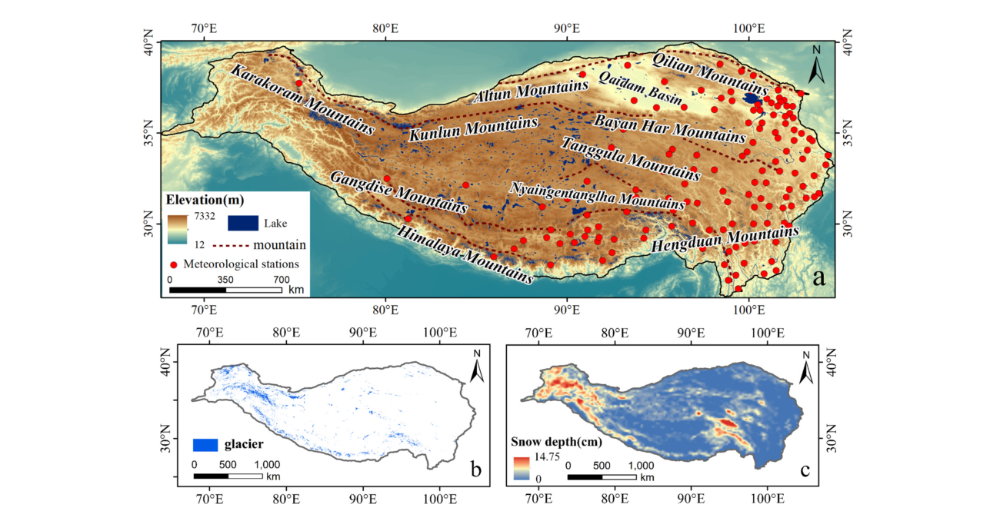
图1. 青藏高原研究区与冰冻圈特征概览。
Fig. 1. Overview of the study area and cryospheric features on the Tibetan Plateau.
a 主要山脉、湖泊和气象站的空间分布。
a Spatial distribution of major mountain ranges, lakes, and meteorological stations.
b 冰川分布（RGI v7）。
b Glacier distribution (RGI v7).
c 2023年平均雪深。
c Mean snow depth in 2023.
东南部青藏高原气候暖（气温 > 13 °C）且湿（降水 > 1500 mm），而西北部则冷（气温 < −10 °C）且干（降水 < 200 mm）（Wang et al., 2023b）。
The southeastern TP has a warm (temperature > 13 °C) and humid (precipitation > 1500 mm) climate, whereas the northwestern portion is characterized by cold (temperature < −10 °C) and arid (precipitation < 200 mm) conditions (Wang et al., 2023b).
青藏高原降水主要集中在6–9月。
Precipitation over the TP is primarily concentrated between June and September.
印度夏季风主导喜马拉雅及高原西南部降水，东亚夏季风则主要影响高原东部（Tada et al., 2016）。
The Indian Summer Monsoon exerts a dominant control on precipitation in the Himalayas and across the southwestern plateau, while the East Asian Summer Monsoon mainly influences the eastern plateau (Tada et al., 2016).
值得注意的是，青藏高原拥有北半球中纬度最大的积雪覆盖区，冰川面积约105 km²，年降雪体积为41.9 × 10⁹ m³（Yao et al., 2012）。
Notably, the TP is home to the largest snow-covered area in mid-latitudes of the Northern Hemisphere, with a glacierized area of approximately 105 km² and annual snowfall volume of 41.9 × 10⁹ m³ (Yao et al., 2012).
因其广阔高耸地形和广泛冰雪覆盖，青藏高原构成亚洲气候系统的关键组分，对区域水循环和能量平衡过程具有深远影响。
Owing to its vast, elevated terrain and extensive snow and ice cover, the TP constitutes a crucial component of the Asian climate system, exerting profound impacts on regional hydrological cycles and energy balance processes.
2.2. 资料2.2. Data
1965–2014年青藏高原140个站点（图1）的逐日气象观测取自中国气象局国家气象信息中心。
Daily meteorological observations from 140 stations (Fig. 1) across the TP during the period 1965–2014 were acquired from the National Meteorological Information Center of the China Meteorological Administration.
该数据集包括日总降水、平均气温、相对湿度、地面气压和站点海拔。
This dataset includes daily records of total precipitation, mean air temperature, relative humidity, surface pressure, and station elevation.
一个显著特征是，明确的降水相态分类——具体分为降雨、降雪或雨夹雪（雨雪混合）——仅在1979年之前的记录中可用（Han et al., 2010）。
A notable feature is that explicit classification of precipitation phases—specifically categorized as rainfall, snowfall, or sleet (a mixture of rain and snow)—is only available for records before 1979 (Han et al., 2010).
对该时段资料，我们按以下步骤实施严格质量控制。
For the data of this period, we implemented strict quality control following the procedures below.
首先，利用各降水相态定义的温度阈值，识别与气温冲突的错误降水记录。
First, we identified erroneous precipitation records that conflicted with air temperature using temperature thresholds defined for each precipitation phase.
其次，根据这些无效记录所占比例标记异常年份和站点。
Next, abnormal years and stations were flagged according to the proportion of these invalid records.
最后，依次剔除问题站点和年份的数据。
Finally, we sequentially eliminated data from problematic stations and years.
为扩展气象资料的时空覆盖，使用了TPMFD（1979–2023），该资料取自国家青藏高原科学数据中心。
To expand the temporal and spatial coverage of meteorological data, the TPMFD (1979–2023) was utilized; this was obtained from the National Tibetan Plateau Data Center.
TPMFD通过天气研究与预报模式结合机器学习对ERA5再分析进行降尺度，并同化站点观测而构建（Zhou et al., 2021; Jiang et al., 2023）。
The TPMFD was developed through downscaling ERA5 reanalysis data via the Weather Research and Forecasting model integrated with machine learning techniques, followed by the assimilation of in-situ station observations (Zhou et al., 2021; Jiang et al., 2023).
该数据集为“第三极”地区提供高精度、高空间分辨率（1/30°）的逐日气象驱动场，关键变量包括总降水、2 m气温、2 m比湿和近地面气压。
This dataset provides high-precision, high-spatial-resolution (1/30°) daily meteorological forcing fields for the “Third Pole” region with key variables including total precipitation, 2-m air temperature, 2-m specific humidity, and near-surface pressure.
这些变量进一步用于推导日相对湿度和Tw，二者对本研究所需的降水相态判别至关重要。
These variables were further used to derive daily relative humidity and Tw, both of which are critical to discriminate precipitation phases in this study.
这些高分辨率参数对复杂地形上的相态判别必不可少，完整计算流程与控制方程见第2.3节。
These high-resolution parameters are essential for discriminating precipitation phases across the complex terrain, and the complete calculation procedures and governing equations are documented in Section 2.3.
为考察控制青藏高原降水相态转换的大尺度气候机制，我们探讨了降水相态变率与主要气候遥相关之间的联系。
To investigate the large-scale climatic mechanisms governing precipitation phase transitions over the TP, we explored the associations between precipitation phase variability and major climatic teleconnections.
选取10个代表性气候指数（表1）来刻画主导遥相关型，并在年尺度上定量其对青藏高原降水相态变化的影响，且不考虑时间滞后。
Ten representative climate indices (Table 1) were selected to characterize the dominant teleconnection patterns and quantify their impacts on precipitation phase variations across the TP at annual scale with no time lags being considered.
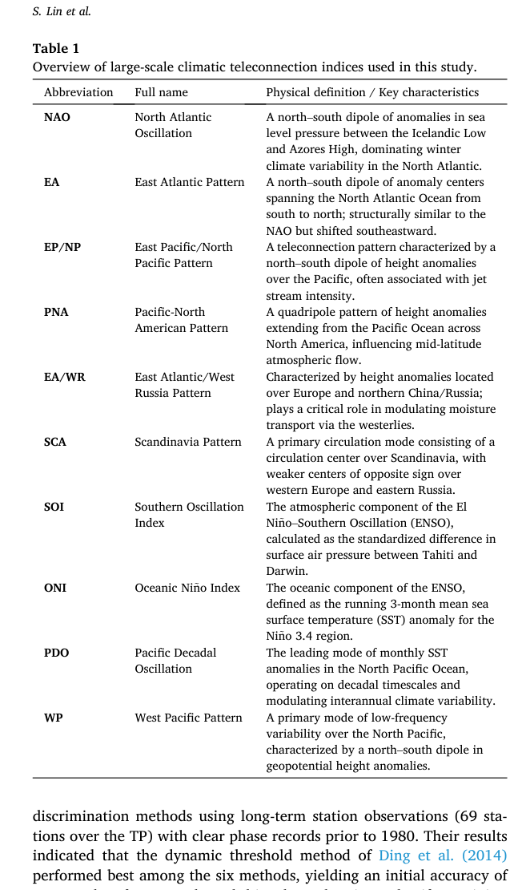
表1. 本研究所用大尺度气候遥相关指数一览。
Table 1. Overview of large-scale climatic teleconnection indices used in this study.
NAO：北大西洋涛动。冰岛低压与亚速尔高压之间的南北海平面气压距平偶极子，主导北大西洋冬季气候变率。
NAO: North Atlantic Oscillation. A north–south dipole of anomalies in sea level pressure between the Icelandic Low and Azores High, dominating winter climate variability in the North Atlantic.
EA：东大西洋型。横跨北大西洋、由南向北分布的南北距平中心偶极子；结构上类似NAO但向东南偏移。
EA: East Atlantic Pattern. A north–south dipole of anomaly centers spanning the North Atlantic Ocean from south to north; structurally similar to the NAO but shifted southeastward.
EP/NP：东太平洋/北太平洋型。以太平洋上空南北高度距平偶极子为特征的遥相关型，常与急流强度有关。
EP/NP: East Pacific/North Pacific Pattern. A teleconnection pattern characterized by a north–south dipole of height anomalies over the Pacific, often associated with jet stream intensity.
PNA：太平洋—北美型。由太平洋延伸至北美的高度距平四极型，影响中纬度大气流动。
PNA: Pacific-North American Pattern. A quadripole pattern of height anomalies extending from the Pacific Ocean across North America, influencing mid-latitude atmospheric flow.
EA/WR：东大西洋/西俄罗斯型。高度距平位于欧洲和中国北部/俄罗斯；在通过西风带调制水汽输送中起关键作用。
EA/WR: East Atlantic/West Russia Pattern. Characterized by height anomalies located over Europe and northern China/Russia; plays a critical role in modulating moisture transport via the westerlies.
SCA：斯堪的纳维亚型。以斯堪的纳维亚上空环流中心为主、西欧和俄罗斯东部有较弱反号中心的主要环流模态。
SCA: Scandinavia Pattern. A primary circulation mode consisting of a circulation center over Scandinavia, with weaker centers of opposite sign over western Europe and eastern Russia.
SOI：南方涛动指数。ENSO的大气分量，按塔希提与达尔文标准化地面气压差计算。
SOI: Southern Oscillation Index. The atmospheric component of the El Niño–Southern Oscillation (ENSO), calculated as the standardized difference in surface air pressure between Tahiti and Darwin.
ONI：海洋尼诺指数。ENSO的海洋分量，定义为 Niño 3.4 区海表温度距平的3个月滑动平均。
ONI: Oceanic Niño Index. The oceanic component of the ENSO, defined as the running 3-month mean sea surface temperature (SST) anomaly for the Niño 3.4 region.
PDO：太平洋年代际振荡。北太平洋月SST距平的主导模态，在年代际时间尺度上运行并调制年际气候变率。
PDO: Pacific Decadal Oscillation. The leading mode of monthly SST anomalies in the North Pacific Ocean, operating on decadal timescales and modulating interannual climate variability.
WP：西太平洋型。北太平洋低频变率的主要模态，以位势高度距平的南北偶极子为特征。
WP: West Pacific Pattern. A primary mode of low-frequency variability over the North Pacific, characterized by a north–south dipole in geopotential height anomalies.
2.3. 降水相态分类2.3. Precipitation phase classification
以往研究通常采用单阈值或双温度阈值方法进行降水相态分类，临界温度一般针对特定区域标定。
Previous studies have commonly adopted single- or dual-temperature threshold methods for precipitation phase classification, with critical temperatures typically calibrated for specific regions.
然而，这类方法表现往往欠佳，尤其在高海拔山地（相态分类精度仍相对偏低），原因在于地形、大气环流与小气候条件之间的复杂相互作用。
However, such approaches often yield suboptimal performance, especially over high-elevation mountainous areas (where precipitation phase classification accuracy remains relatively low), owing to complex interactions between terrain, atmospheric circulation, and microclimatic conditions.
本研究采用Ding et al.（2014）发展的参数化降水相态方案，依据地表海拔和局地气象条件判别降水相态。
In this study, we employed the parameterized precipitation phase scheme developed by Ding et al. (2014), which discriminates precipitation phase based on surface elevation and local meteorological conditions.
该方案以海拔（Z，km）、相对湿度（RH，0–1）、气温（Ta，°C）和地面气压（Ps，hPa）作为输入变量。
This scheme incorporates elevation (Z, km), relative humidity (RH, 0–1), air temperature (Ta, °C), and surface pressure (Ps, hPa) as input variables.
与常规温度阈值方法不同，该方法以Tw（°C）作为更具物理意义的相态诊断变量：Tw由式1计算，其中RH为相对湿度（无量纲，取值0–1），esat（式2）为气温Ta下的饱和水汽压（hPa）（Murray, 1967）。
Unlike conventional temperature-threshold methods, this approach utilizes Tw (°C) as a more physically meaningful diagnostic variable for phase discrimination: Tw is calculated using Eq. 1, where RH represents relative humidity (dimensionless, ranging from 0 to 1), and esat (Eq. 2) denotes the saturation vapor pressure (hPa) at air temperature Ta (Murray, 1967).
通过综合多个环境参数，这一多参数方法在多样环境条件下显著提高分类精度，为复杂山地降水相态分类提供了稳健方法框架。
By integrating multiple environmental parameters, this multi-parameter approach substantially improves classification accuracy under diverse environmental conditions, offering a robust methodological framework for precipitation phase classification in complex mountainous regions.
Tw = Ta − esat(Ta)(1 − RH) / (0.000643 ps + ∂esat/∂Ta) （1）
Tw = Ta − esat(Ta)(1 − RH) / (0.000643ps + ∂esat/∂Ta) (1)
esat(Ta) = 6.1078 exp[17.27 Ta / (Ta + 237.3)] （2）
esat(Ta) = 6.1078exp(17.27Ta / (Ta + 237.3)) (2)
降水类型进一步由动态双阈值方案判别，其中上、下温度阈值（Tmax和Tmin，单位°C）随Z和RH变化。
Precipitation types were further discriminated using a dynamic dual-threshold scheme, where the upper and lower temperature thresholds (Tmax and Tmin, in °C) vary with Z and RH.
具体分类准则定义为式3：
The specific classification criteria are defined as Eq. 3:
type = 雪，若 Tw ≤ Tmin；雨夹雪，若 Tmin < Tw < Tmax；雨，若 Tw ≥ Tmax （3）
type = snow, if Tw ≤ Tmin; sleet, if Tmin < Tw < Tmax; rain, if Tw ≥ Tmax (3)
阈值Tmax和Tmin由三个经验参数决定，即ΔT、ΔS和T₀，它们各自是Z和RH的函数。
The thresholds Tmax and Tmin are determined by three empirical parameters, namely, ΔT, ΔS, and T₀, each of which is a function of Z and RH.
Tmin和Tmax的具体表达式分别见式4和式5：
The specific formulations for Tmin and Tmax are presented in Eqs. 4 and 5, respectively:
当 ΔT/ΔS > ln2 时，Tmin = T₀ − ΔS ln[exp(ΔT/ΔS) − 2exp(−ΔT/ΔS)]；否则 Tmin = T₀ （4）
Tmin = T₀ − ΔS ln[exp(ΔT/ΔS) − 2exp(−ΔT/ΔS)] if ΔT/ΔS > ln2; otherwise Tmin = T₀ (4)
当 ΔT/ΔS > ln2 时，Tmax = 2T₀ − Tmin；否则 Tmax = T₀ （5）
Tmax = 2T₀ − Tmin if ΔT/ΔS > ln2; otherwise Tmax = T₀ (5)
根据Ding et al.（2014）提出的参数化方案——该方案描述降水类型对Z和气象条件的依赖——Tw、Z与降水类型的关系可由随海拔变化的参数T₀、ΔT和ΔS刻画。
According to the parameterization scheme proposed by Ding et al. (2014), which describes the dependence of precipitation types on Z and meteorological conditions, the relationship between Tw, Z, and precipitation type can be characterized by the elevation-dependent parameters T₀, ΔT, and ΔS.
具体而言，T₀一般随海拔升高而增大，而ΔT和ΔS对海拔的敏感性有限。
Specifically, T₀ generally exhibits an increasing trend with increasing elevation, whereas ΔT and ΔS show limited sensitivity to altitude.
鉴于T₀同时受Z和RH影响，可表述如下（式6–8）：
Given that T₀ is co-influenced by Z and RH, it can be formulated as follows (Eqs. 6–8):
ΔT = 0.215 − 0.099 × RH + 1.018 × RH² （6）
ΔT = 0.215 − 0.099 × RH + 1.018 × RH² (6)
ΔS = 2.374 − 1.634 × RH （7）
ΔS = 2.374 − 1.634 × RH (7)
T₀ = −5.87 − 0.1042 × Z + 0.0885 × Z² + 16.06 × RH − 9.614 × RH² （8）
T₀ = −5.87 − 0.1042 × Z + 0.0885 × Z² + 16.06 × RH − 9.614 × RH² (8)
如Ding et al.（2014）所述，该方案在青藏高原表现尤佳，校准子集总体精度超过86%，且在高海拔区的验证表现甚至优于其他区域。
As documented in Ding et al. (2014), the scheme performs particularly well over the TP, with an overall accuracy exceeding 86% for the calibration subset, and even better validation performance in high-elevation areas relative to other regions.
为进一步验证其在青藏高原的适用性，我们借鉴Zhang et al.（2024）的结果，他们利用1980年前具有明确相态记录的长期站点观测（青藏高原69站）系统评估了6种广泛使用的降水相态判别方法。
To further verify its applicability to the TP, we draw on findings from Zhang et al. (2024), who systematically evaluated six widely used precipitation phase discrimination methods using long-term station observations (69 stations over the TP) with clear phase records prior to 1980.
其结果表明，Ding et al.（2014）的动态阈值方法在6种方法中表现最好，初始精度为81.4%。
Their results indicated that the dynamic threshold method of Ding et al. (2014) performed best among the six methods, yielding an initial accuracy of 81.4%.
因此，本文采用该方案对TPMFD进行降水相态分类。
Therefore, we adopted this scheme herein to classify precipitation phases from the TPMFD.
2.4. 趋势分析2.4. Trend analysis
为定量青藏高原降水及其相态分量的长期变化，我们使用普通最小二乘（OLS）回归进行线性趋势分析。
To quantify long-term changes in precipitation and its phase components over the TP, we conducted a linear trend analysis using ordinary least squares (OLS) regression.
对每个时间序列（降水、降雨、降雪、雨夹雪及其各自比例的年和季节总量），通过最小化残差平方和估计趋势斜率，并用双尾t检验评估统计显著性。
For each time series (annual and seasonal totals of precipitation, rainfall, snowfall, sleet, and their respective fractions), the trend slope was estimated by minimizing the sum of squared residuals, and its statistical significance was evaluated using a two-tailed t-test.
我们确认使用OLS并不影响本研究的主要结论，因为替代趋势方法（例如带Sen斜率的Mann–Kendall检验）给出几乎相同的结果。
We confirm that using OLS does not affect the main conclusions of this study, as alternative trend methods (e.g., the Mann–Kendall test with Sen's slope) produce nearly identical result.
3. 结果3. Results
3.1. 雨—雪相态分类精度验证3.1. Validation of rain–snow phase classification accuracy
为验证本研究所实施降水相态分类的可靠性，使用了1965–1979年多个气象站的现场观测资料。
To validate the reliability of the precipitation phase classification implemented in this study, in-situ observational data from multiple meteorological stations for the period 1965–1979 were utilized.
这些记录提供了明确的降水类型判别，因此该时段适于作为评估模式精度的验证期。
These records provide explicit discrimination of precipitation types, meaning that this interval is well-suited to be the validation period to assess model accuracy.
模式的降雨检测精确率为98.95%、召回率为93.02%（图2a），二者均被认为可接受。
The model achieved a rainfall detection precision of 98.95% and recall rate of 93.02% (Fig. 2a), both of which are deemed acceptable.
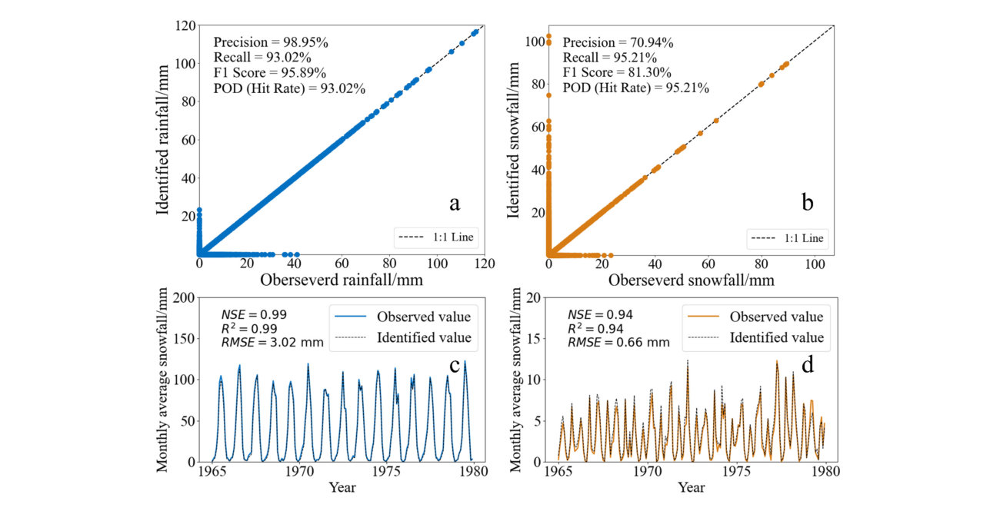
图2. 1965–1979年观测与识别降水相态的比较。
Fig. 2. Comparisons of observed and identified precipitation phases during the period 1965–1979.
a、b 日尺度降雨和降雪的定性识别。
a, b Qualitative identification of rainfall and snowfall at the daily scale.
c、d 月尺度模拟与观测降水相态的定量比较。
c, d Quantitative comparison between modeled and observed precipitation phases at the monthly scale.
这一稳健表现可能归因于青藏高原降雨事件具有鲜明的气象特征，从而便于模式准确识别此类事件。
This robust performance is likely attributed to the distinct meteorological characteristics of rainfall events on the TP, which facilitate the accurate identification of such events by the model.
对降雪事件（图2b），该方法在所有站点上的总体精确率为70.94%、召回率为95.21%。
For snowfall events (Fig. 2b), the method yielded an overall precision of 70.94% and recall rate of 95.21% across all stations.
我们发现，尽管模式可能高估降雪发生次数，但其对雪的检测敏感性高、漏报很少。
We found that while the model may overestimate snowfall occurrences, it exhibited high sensitivity to snow detection with minimal false negatives.
进一步的定量评估通过比较观测的月平均相态降水与由动态Tw阈值方案识别的TPMFD月平均值来完成。
A further quantitative evaluation was conducted by comparing the observed monthly mean precipitation into phases with the TPMFD monthly mean identified by the dynamic Tw-based threshold scheme.
1965–1979年月平均降雨总量的观测值与模拟值高度一致（图2c），Nash–Sutcliffe效率（NSE）为0.99，决定系数（R²）为0.99。
The observed and modeled monthly mean rainfall totals for the period 1965–1979 showed strong agreement (Fig. 2c), with a Nash–Sutcliffe Efficiency (NSE) of 0.99 and coefficient of determination (R²) of 0.99.
这些指标确认模式复现月降雨时间变率的能力很强。
These metrics confirm the excellent capability of the model to replicate the temporal variability of monthly rainfall.
对降雪（图2d），模式表现同样令人满意，NSE为0.94、R²为0.94，表明模拟值与观测值匹配良好，只是技巧略低于降雨。
For snowfall (Fig. 2d), the model also performed satisfactorily, with an NSE of 0.94 and R² of 0.94, indicating a good match between simulated and observed values, albeit with slightly lower skill than that for rainfall.
3.2. 年尺度降水相态的时空变化3.2. Spatiotemporal variations in annual-scale precipitation phases
3.2.1. 降水的时间演变与相态转换特征3.2.1. Temporal evolution and phase transition characteristics of precipitation
覆盖1979–2023年的长期分析揭示了青藏高原降水强度与相态组成的深刻重组（图3）。
A long-term analysis spanning the period 1979–2023 revealed a profound reorganization of precipitation magnitude and phase composition over the TP (Fig. 3).
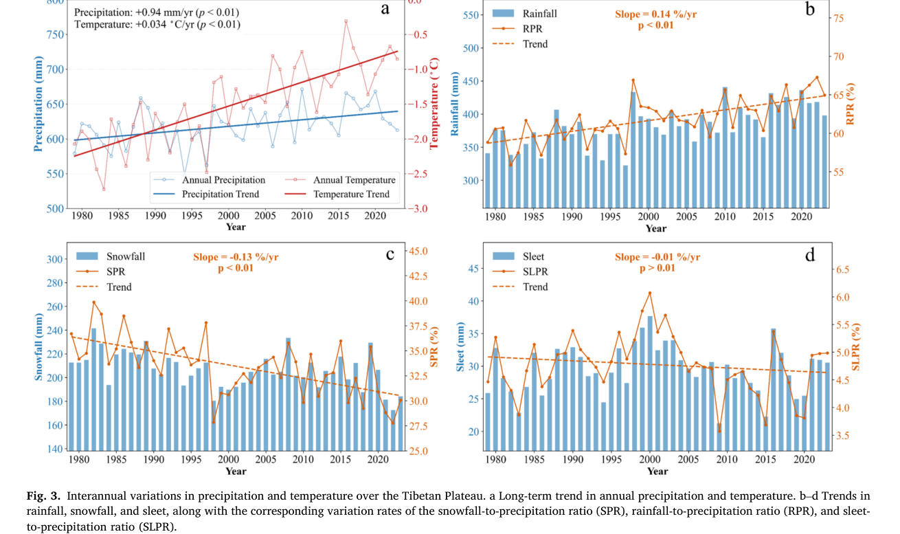
图3. 青藏高原降水和气温的年际变化。
Fig. 3. Interannual variations in precipitation and temperature over the Tibetan Plateau.
a 年降水和气温的长期趋势。
a Long-term trend in annual precipitation and temperature.
b–d 降雨、降雪和雨夹雪的趋势，以及相应的降雪占总降水比例（SPR）、降雨占总降水比例（RPR）和雨夹雪占总降水比例（SLPR）变化率。
b–d Trends in rainfall, snowfall, and sleet, along with the corresponding variation rates of the snowfall-to-precipitation ratio (SPR), rainfall-to-precipitation ratio (RPR), and sleet-to-precipitation ratio (SLPR).
总降水（平均619 mm）呈统计显著增加趋势，速率为0.94 mm/yr（图3a）。
Total precipitation (average of 619 mm) exhibited a statistically significant increasing trend at a rate of 0.94 mm/yr (Fig. 3a).
该趋势表明过去半个世纪高原总体变湿倾向持续加强，这一型态可能与高原热力强迫和大尺度大气环流转变的共同作用有关。
This trend indicates a sustained intensification of the overall wetting tendency over the plateau during the past half-century, a pattern that may be associated with the combined effects of plateau thermal forcing and shifts in large-scale atmospheric circulation.
就不同降水相态而言，降雪（平均207 mm）呈统计显著减少趋势，速率为−0.51 mm/yr。
In terms of different precipitation phases, snowfall (average of 207 mm) displayed a statistically significant decreasing trend at a rate of −0.51 mm/yr.
降雪占总降水比例（SPR，平均33%）同步下降，速率为每年−0.13个百分点（pp/yr），反映固态降水对总降水的贡献在减弱（图3c）。
The snowfall-to-precipitation ratio (SPR, average of 33%) exhibited a synchronous decline of −0.13 percentage points per year (pp/yr), reflecting the diminishing contribution of solid precipitation to total precipitation (Fig. 3c).
相比之下，降雨（平均383 mm）以1.45 mm/yr的速率增加，降雨占总降水比例（RPR，平均62%）呈统计显著增加趋势，为0.14 pp/yr（图3b）。
In contrast, rainfall (average of 383 mm) showed an increasing trend at a rate of 1.45 mm/yr, and the rainfall-to-precipitation ratio (RPR, average of 62%) displayed a statistically significant increasing trend of 0.14 pp./yr (Fig. 3b).
这些变化共同表明近几十年来青藏高原存在由固态向液态降水的明显相态转换。
These changes collectively demonstrate a distinct phase transition from solid to liquid precipitation over the TP in recent decades.
雨夹雪（平均29 mm）总体变化相对较小；其量值呈统计不显著的减少，为0.002 mm/yr，而雨夹雪占总降水比例（SLPR，平均5%）呈−0.01 pp/yr的下降趋势（图3d）。
Sleet (average of 29 mm) exhibited relatively minor overall changes; its magnitude showed a statistically insignificant decrease of 0.002 mm/yr, while the sleet-to-precipitation ratio (SLPR, average of 5%) displayed a decreasing trend of −0.01 pp./yr (Fig. 3d).
这表明尽管混合相降水对总体降水体积的贡献有限，其相对重要性在研究期内仍有所下降。
This suggests that although the contribution of mixed-phase precipitation to total precipitation volume is limited, its relative importance has declined over the study period.
空间分析揭示了青藏高原降水相态演变的显著空间异质性。
Spatial analysis revealed pronounced spatial heterogeneity in the evolution of precipitation phases across the TP.
总降水呈现高原内部增加、高原边缘减少的鲜明空间型（图4a）。
Total precipitation exhibited a distinct spatial pattern of increase in the plateau interior and decrease at the plateau margins (Fig. 4a).
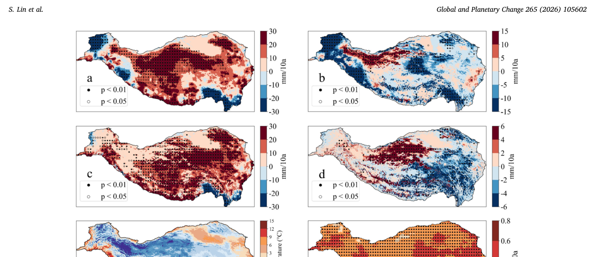
图4. 降水相态和气温变化趋势的空间分布。
Fig. 4. Spatial distribution of variation trends in precipitation phases and temperature.
a 总降水。b 降雪。c 降雨。d 雨夹雪。e 年平均气温。f 气温趋势。
a Total precipitation. b Snowfall. c Rainfall. d Sleet. e Annual mean temperature. f Temperature trend.
空心圆和实心圆分别表示在 p < 0.05 和 p < 0.01 水平上趋势统计显著的格点。
Open circles and solid circles denote grid cells with statistically significant trends at the p < 0.05 level, and p < 0.01 level, respectively.
具体而言，中部青藏高原（即羌塘高原）和东北部呈统计显著增加趋势（p < 0.05）。
Specifically, the central TP (i.e., Qiangtang Plateau) and northeastern regions exhibited a statistically significant increasing trend (p < 0.05).
该空间型与降雨增强型（图4c）高度一致，有力说明液态降水是高原大部分地区观测到的变湿趋势的主要驱动。
This spatial pattern was highly consistent with the pattern of rainfall intensification (Fig. 4c), providing compelling evidence that liquid precipitation was the primary driver of the observed wetting trend across most of the plateau.
相反，涵盖横断山脉的东南部青藏高原，总降水和降雨均显著下降，表明该特定亚区趋向更暖更干的气候。
In contrast, the southeastern TP, encompassing the Hengduan Mountains, exhibited a significant decline in both total precipitation and rainfall, indicating a tendency toward a warmer and drier climate in this specific sub-region.
结合该区观测到的强增温趋势（+3至+5 °C/10a，图4f），这些结果为该亚区趋向暖干气候提供了定量证据。
When combined with the strong warming trend observed in this region (+3 to +5 °C/10a, Fig. 4f), these results provide quantitative evidence supporting a trend toward a warmer and drier climate in this subregion.
与此相对，降雪在高原上呈广泛减少趋势（图4b），最显著下降发生在中高海拔内陆高原及部分南部边缘山地（图4b中蓝色阴影区，变化可达约−15 mm/10a）。
Conversely, snowfall displayed a widespread decreasing trend across the plateau (Fig. 4b), with the most pronounced declines occurring in the mid-to-high elevation inland plateau and parts of the southern marginal mountains (blue-shaded regions in Fig. 4b, with changes reaching approximately −15 mm/10a).
此外，这些区域常达到统计显著（p < 0.01），确认了下降趋势的空间稳健性。
Furthermore, these regions were frequently marked by statistical significance (p < 0.01), confirming the spatial robustness of the declining trend.
具体而言，羌塘高原及中部唐古拉山附近，以及东南部青藏高原部分山区，均观测到显著降雪减少。
Specifically, significant reductions in snowfall were observed on the Qiangtang Plateau and in the vicinity of the Tanggula Mountains on the central TP, as well as in parts of mountainous areas on the southeastern TP.
同样，西北部青藏高原（即昆仑–帕米尔地区）以及南部高原边缘喜马拉雅北坡沿线，也呈现普遍的降雪减弱，且统计显著格点密度高。
Similarly, the northwestern TP (i.e., Kunlun–Pamir region) and areas along northern slopes of the Himalayas on the southern plateau margin also exhibited a universal attenuation of snowfall, with a high density of statistically significant grid points.
降雪的广泛减少在空间上与统计显著的增温趋势一致（图4f），表明区域热力加强很可能是观测到的固—液相态转变的主要驱动。
The widespread reduction in snowfall is spatially consistent with statistically significant warming trends (Fig. 4f), indicating that regional thermodynamic intensification is likely a primary driver of the observed shift from solid to liquid precipitation.
尽管雨夹雪的总体趋势统计不显著且相对稳定（图4d），这掩盖了受区域热力梯度调节的微妙而空间分异的型态。
Although the overall trend in sleet was statistically insignificant and relatively stable (Fig. 4d), this masked a subtle yet spatially divergent pattern regulated by regional thermal gradients.
年平均气温的空间型（图4e）及其长期趋势（图4f）进一步表明，增温在东南部和边缘带更显著，与观测到的由雪和雨夹雪向降雨的转变一致。
The spatial pattern of mean annual temperature (Fig. 4e) and its long-term trend (Fig. 4f) further demonstrate that warming is more pronounced in the southeastern and marginal zones, consistent with the observed shift from snow and sleet toward rainfall.
在青藏高原更冷的内部地区（即唐古拉–昆仑区），雨夹雪呈轻微增加趋势（约2–6 mm/10a），指示由纯降雪向雨夹雪的热力过渡。
In colder interior areas of the TP (i.e., Tanggula–Kunlun region), sleet exhibited a slight increasing trend (approximately 2–6 mm/10a), indicative of a thermodynamic transition from pure snowfall to sleet.
相反，在历史上更暖的地区，如祁连山和东南高原边缘，雨夹雪减少（−2至−6 mm/10a）。
Conversely, in historically warmer regions such as the Qilian Mountains and southeastern plateau margin, sleet experienced a decline (−2 to −6 mm/10a).
在这些区域，强增温（图4f）很可能把过渡相推过其上临界阈值，标志着由雨夹雪进一步转向单纯降雨。
In these regions, strong warming (Fig. 4f) likely pushes the transitional phase beyond its upper critical threshold, marking a further shift from sleet toward rainfall alone.
尽管存在这些局地相态转换，雨夹雪变率的绝对量级仍远小于降雨和降雪，意味着雨夹雪对总降水总体变化的贡献有限。
Despite these localized phase transitions, the absolute magnitude of sleet variability remained considerably smaller than those of rainfall and snowfall, implying a limited contribution of sleet to overall changes in total precipitation.
3.2.2. 降水相态比例的空间分布与趋势3.2.2. Spatial distribution and trends of precipitation phase proportions
气候态上，SPR和RPR呈现鲜明且互补的空间梯度（图5a和c）。
Climatologically, the SPR and RPR displayed distinct, complementary spatial gradients (Fig. 5a and c).
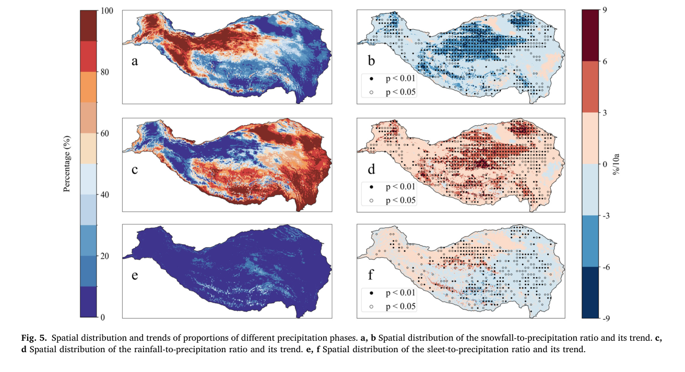
图5. 不同降水相态比例的空间分布及其趋势。
Fig. 5. Spatial distribution and trends of proportions of different precipitation phases.
a、b 降雪占总降水比例的空间分布及其趋势。
a, b Spatial distribution of the snowfall-to-precipitation ratio and its trend.
c、d 降雨占总降水比例的空间分布及其趋势。
c, d Spatial distribution of the rainfall-to-precipitation ratio and its trend.
e、f 雨夹雪占总降水比例的空间分布及其趋势。
e, f Spatial distribution of the sleet-to-precipitation ratio and its trend.
高SPR值主要集中在青藏高原西部和北部高海拔区，涵盖昆仑–喀喇昆仑–帕米尔山脉及羌塘高原北部。
High SPR values were predominantly concentrated in the high-altitude western and northern regions of the TP, encompassing the Kunlun–Karakoram–Pamir ranges and northern Qiangtang Plateau.
在这些持续寒冷的地区，固态降水主导年降水收支，SPR超过70%（局地 >90%），表现为典型的高寒干旱降水型。
In these persistently cold regions, solid precipitation dominated the annual precipitation budget, with SPR values exceeding 70% (locally >90%), characterizing a typical alpine cold-arid precipitation regime.
相反，高RPR值盛行于高原东部和东南缘，包括横断山脉和喜马拉雅南麓。
Conversely, high RPR values were prevalent in eastern and southeastern margins of the plateau, including the Hengduan Mountains and southern foothills of the Himalayas.
受南亚季风与东亚季风相互作用影响，这些更暖、水汽更丰的地区表现为降雨主导型，RPR一般超过60%（局地 >90%）。
Influenced by the interaction of the South Asian and East Asian monsoons, these warmer, moisture-rich regions exhibited a rainfall-dominated regime, with RPR values generally exceeding 60% (locally >90%).
雨夹雪主要分布在由中部向南部青藏高原延伸的过渡带，沿念青唐古拉–冈底斯–北喜马拉雅轴线（图5e）。
Sleet was primarily distributed in a transition belt extending from the central to southern TP, along the Nyainqentanglha–Gangdise–Northern Himalayas axis (Fig. 5e).
这里SLPR通常为20%–50%，标志着固态与液态降水型之间的鲜明生态气候过渡带，受海拔、局地热力条件和大气水汽输送相互作用调节。
Here, SLPR values typically ranged from 20% to 50%, marking a distinct ecoclimatic transition zone between solid and liquid precipitation regimes, this being regulated by the interplay of elevation, local thermal conditions, and atmospheric moisture transport.
长期趋势分析揭示了降水相态组成的系统性重组。
Long-term trend analysis revealed a systematic reorganization of precipitation phase composition.
固态降水出现显著而广泛的减少。
A significant and widespread reduction in solid precipitation was evident.
SPR在几乎整个高原呈一致、统计显著的下降，中东部内部地区减幅为−3%至−9%/10a（p < 0.01）（图5b）。
The SPR exhibited a coherent, statistically significant decline across nearly the entire plateau, with reduction rates ranging from −3% to −9%/10a (p < 0.01) in the central and eastern interior regions (Fig. 5b).
这种高度的空间一致性和统计显著性表明，观测到的“降雪减少”很可能与升温及0 °C等温线抬升有关。
This high degree of spatial consistency and statistical significance suggests that the observed “snow decline” is likely associated with rising temperatures and upward elevation of the 0 °C isotherm.
同时也观测到液态降水的补偿性增强。
A compensatory intensification of liquid precipitation was also observed.
在空间上镜像SPR的下降，RPR呈+3%至+9%/10a的稳健增加趋势（图5d）。
Spatially mirroring the decline in SPR, the RPR exhibited a robust increasing trend of +3% to +9%/10a (Fig. 5d).
这表明增温驱动固态降水被液态降水替代，原先以降雪发生的降水事件正越来越多地以降雨落下。
This indicates a warming-driven substitution of solid precipitation by liquid precipitation, whereby precipitation events formerly occurring as snow are increasingly falling as rain.
这种“降雨侵占”在中部高原尤为显著，有可能改变源头流域的水文连通性和径流生成机制。
This “rainfall encroachment” was particularly pronounced across the central plateau, with the potential to alter hydrological connectivity and runoff generation mechanisms in headwater catchments.
混合降水对气候变暖呈非线性响应。
Mixed precipitation exhibited a nonlinear response to climatic warming.
与纯固态和纯液态的单调趋势不同，SLPR呈现空间不一致且统计偏弱的趋势（图5f）。
In contrast to the monotonic trends of pure solid and liquid phases, the SLPR displayed a spatially incoherent and statistically weak trend (Fig. 5f).
多数地区趋势可忽略（±3%/10a），通过显著性检验（p < 0.05）的区域稀疏而破碎。
Trends in most regions were negligible (± 3%/10a), with areas passing the significance test (p < 0.05) being sparse and fragmented.
这种空间异质性表明，雨夹雪是一种被限制在狭窄热力窗口内的短暂、温度敏感相态。
This spatial heterogeneity suggests that sleet acts as a transient, temperature-sensitive phase confined to a narrow thermal window.
在快速气候变暖下，由固态向液态降水的转换很可能绕过或迅速越过有利于雨夹雪形成的热力条件，从而排除混合相降水型的持续扩张。
Under rapid climate warming, the transition from solid to liquid precipitation likely bypasses or rapidly exceeds the thermal conditions favorable for sleet formation, thereby precluding the sustained expansion of the mixed-phase precipitation regime.
3.3. 降水相态的季节分布特征与趋势3.3. Seasonal distribution characteristics and trends of precipitation phases
图6展示了1979–2023年青藏高原降水相态的显著季节差异及其长期演变轨迹。
Fig. 6 illustrates pronounced seasonal disparities in precipitation phases over the TP and their long-term evolutionary trajectories during the period 1979–2023.
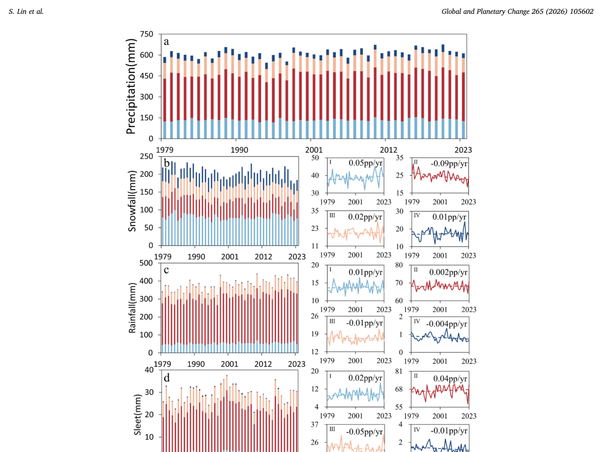
图6. 降水相态的季节分布。
Fig. 6. Seasonal distribution of precipitation phases.
a–d 分别为不同季节的年总降水、降雪、降雨和雨夹雪时间序列。
a–d Time series of annual total precipitation, snowfall, rainfall, and sleet, respectively, in different seasons.
右侧插图显示各降水相态对其自身年总量的季节贡献（I：春季（MAM），II：夏季（JJA），III：秋季（SON），IV：冬季（DJF））。
The insets on the right display the seasonal contribution of each precipitation phase to its own annual total amount (I: Spring (MAM), II: Summer (JJA), III: Autumn (SON), IV: Winter (DJF)).
具体而言，图6考察各特定相态对其自身年总量的季节贡献，这一度量不同于图7中分析的季节相态—降水比（SPR、RPR和SLPR）。
Specifically, Fig. 6 examines the seasonal contribution of each specific phase to its own annual total amount, a metric distinct from the seasonal phase-to-precipitation ratios (SPR, RPR, and SLPR) analyzed in Fig. 7.
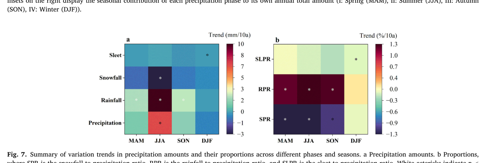
图7. 不同相态和季节的降水量及其比例变化趋势汇总。
Fig. 7. Summary of variation trends in precipitation amounts and their proportions across different phases and seasons.
a 降水量。b 比例，其中SPR为降雪占总降水比例，RPR为降雨占总降水比例，SLPR为雨夹雪占总降水比例。
a Precipitation amounts. b Proportions, where SPR is the snowfall-to-precipitation ratio, RPR is the rainfall-to-precipitation ratio, and SLPR is the sleet-to-precipitation ratio.
白色星号表示 p < 0.01，黑色星号表示 p < 0.05。
White asterisks indicate p < 0.01, and black asterisks indicate p < 0.05.
MAM = 3、4、5月；JJA = 6、7、8月；SON = 9、10、11月；DJF = 12、1、2月。
MAM = March, April, May; JJA = June, July, August; SON = September, October, November; DJF = December, January, February.
在亚洲季风系统的强烈调制下，总降水呈典型的夏季主导型，夏季（331 mm）贡献年降水收支的绝大部分，其后为春季（135 mm）、秋季（114 mm）和冬季（39 mm）。
Modulated strongly by the Asian monsoon system, total precipitation exhibited a typical summer-dominated regime, with summer (331 mm) contributing the vast majority of the annual precipitation budget, followed by spring (135 mm), autumn (114 mm), and winter (39 mm).
春季是年降雪收支的主要贡献季节（38%），表明这一低温且水汽充足的季节是积雪的关键时段。
Spring was the primary season contributing to the annual snowfall budget (38%), indicating that this low-temperature season with sufficient moisture is the key period for snow accumulation.
然而值得注意的是，尽管春季SPR（春季总降水中雪的比例）呈显著负趋势（图7b），春季降雪对年降雪收支的相对贡献仍相对稳定（图6b，面板I）。
However, it is noteworthy that while the Spring SPR (the proportion of snow within spring total precipitation) shows a significant negative trend (Fig. 7b), the spring snowfall's relative contribution to the annual snow budget remains relatively stable (Fig. 6b, Panel I).
最显著的转变出现在夏季（图6b，面板II），夏季降雪对其年总量的贡献呈统计显著下降，速率为−0.09 pp/yr。
The most striking shift was observed in summer (Fig. 6b, Panel II), where the contribution of summer snowfall to its annual total exhibited a statistically significant decreasing trend at a rate of −0.09 pp./yr.
这一“夏季失雪”现象表明，该暖季升温正驱动潜在降雪事件大规模转为液态或混合相降水，从而降低夏季在年降雪收支中的份额。
This “summer snow loss” phenomenon indicates that rising temperatures in this warm season are driving the large-scale conversion of potential snowfall events into liquid or mixed-phase precipitation, thereby reducing summer's share in the annual snow budget.
对降雨而言，尽管总量呈增加趋势且最大季节贡献发生在夏季（68%），其贡献份额在各具体季节的变化趋势相对较弱。
For rainfall, although the total amount showed an increasing trend and the largest seasonal contribution occurred in summer (68%), the variation trends of its contribution share in each specific season were relatively weak.
与降雨类似，雨夹雪也在夏季记录到最大季节贡献（67%），但其年收支分配有从秋季向夏季转移的倾向。
Similar to rainfall, sleet also recorded its largest seasonal contribution in summer (67%), but there was a tendency for its annual budget to shift its allocation from autumn to summer.
综合来看，这些结果表明青藏高原降水相态变化并非在各季节均匀分布；相反，其特征是夏季对年降雪贡献快速下降，以及夏季在混合和液态降水中份额的补偿性增加。
Collectively, these results demonstrate that changes in precipitation phases over the TP are not uniformly distributed across seasons; instead, they are characterized by a rapid decline in summer's contribution to annual snowfall and a compensatory increase in summer's share of mixed and liquid precipitation.
趋势分析揭示了青藏高原降水相态的显著季节转变（图7）。
Trend analysis revealed pronounced seasonal shifts in precipitation phase across the TP (Fig. 7).
降雨在春、夏、秋呈统计显著增加（p < 0.01），直接驱动观测到的总降水增加，其中夏季趋势最为稳健。
Rainfall exhibited statistically significant increases in spring, summer, and autumn (p < 0.01), directly driving the observed increase in total precipitation, with the most robust trend observed in summer.
相反，降雪在夏季明显减少，表明暖季固态降水亏缺。
In contrast, snowfall declined markedly during summer, indicating a deficit in solid-phase precipitation during the warm season.
这一亏缺可联系到区域增温背景下融化与相态转换过程的增强。
This deficit can be linked to enhanced melting and phase conversion processes under the backdrop of regional warming.
冬季雨夹雪的显著增加很可能反映冷季由纯降雪向混合相降水事件的过渡，与临界相态转换阈值附近的温度诱导变化一致。
The significant increase in sleet during winter likely reflects a transition from pure snowfall to mixed-phase precipitation events in the cold season, consistent with temperature-induced changes near the critical phase-transition threshold.
夏季这种强烈的“固—液降水替代”进一步得到比率指标的印证：夏季SPR在所有季节中下降最陡且统计最显著，与RPR的大幅上升形成精确镜像。
This intense “solid-to-liquid precipitation substitution” in summer was further corroborated by ratio-based metrics: the summer SPR displayed the steepest and most statistically significant decline of all seasons, forming a precise mirror image of the substantial rise in the RPR.
这些发现意味着，尽管全年可见“变暖变湿”趋势，其物理表现却由夏季降雨增加所主导。
These findings imply that while a “warming and wetting” trend was evident throughout the year, its physical manifestation was dominated by increased summer rainfall.
3.4. 大尺度气候指数与降水相态转变的联系3.4. Linkages between large-scale climate indices and precipitation phase shifts
青藏高原降雨和降雪对大尺度大气环流型表现出不同的敏感性（图8）。
Rainfall and snowfall over the TP exhibited distinct sensitivities to large-scale atmospheric circulation patterns (Fig. 8).
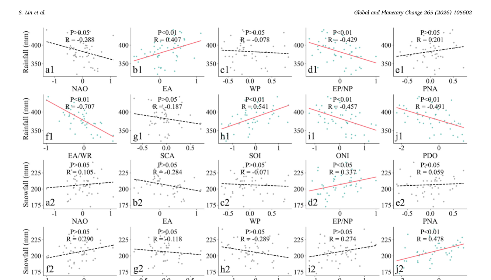
图8. 10个气候指数与降水相态量的相关分析。
Fig. 8. Correlation analysis between ten climate indices and precipitation phase amounts.
a1–j1 年降雨与10个气候指数（NAO、EA、WP、EP/NP、PNA、EA/WR、SCA、SOI、ONI和PDO；定义见表1）的线性回归散点图，含相关系数和显著性水平。
a1–j1 Scatter plots showing the linear regression between annual rainfall and ten climate indices (NAO, EA, WP, EP/NP, PNA, EA/WR, SCA, SOI, ONI, and PDO; see Table 1 for definitions of these indices), including correlation coefficients and significance levels.
a2–j2 年降雪与相应气候指数的关系。
a2–j2 Relationships between annual snowfall and the corresponding climate indices.
红色拟合线表示统计显著关系。
The red fitted line indicates a statistically significant relationship.
（关于本图图例中颜色指代的解释，读者请参阅本文网络版。）
(For interpretation of the references to colour in this figure legend, the reader is referred to the web version of this article.)
降雨对半球尺度动力过程表现出显著敏感性，同时受到欧亚和太平洋气候遥相关的强烈调制。
Rainfall displayed a pronounced sensitivity to hemispheric-scale dynamical processes, being greatly modulated by both Eurasian and Pacific climatic teleconnections.
值得注意的是，东大西洋/西俄罗斯（EA/WR）型与年降雨呈最强负相关（图8f1，R = −0.707，p < 0.01）。
Notably, the East Atlantic/West Russia (EA/WR) pattern showed the strongest negative correlation with annual rainfall (Fig. 8f1, R = −0.707, p < 0.01).
这表明EA/WR环流的负位相可能与向青藏高原的水汽输送增强有关，从而加强液态降水。
This suggests that the negative phase of the EA/WR circulation may be associated with enhanced moisture transport to the TP, thereby intensifying liquid precipitation.
此外，与ENSO相关的气候遥相关（以南方涛动指数（SOI）和海洋尼诺指数（ONI）表征）以及PDO也显示出显著相关。
Furthermore, climatic teleconnections associated with the ENSO (as represented by the Southern Oscillation Index (SOI) and Oceanic Niño Index (ONI)) and PDO displayed significant correlations.
这些关系表明，太平洋海表温度（SST）异常通过海气耦合机制与青藏高原季风降雨强度相联系。
These relationships indicate that Pacific sea surface temperature (SST) anomalies are associated with monsoon rainfall intensity over the TP via air–sea coupling mechanisms.
具体而言，类拉尼娜条件（高SOI、低ONI）和PDO负位相共同有利于降雨增加（图8h1、8i1和8j1）。
Specifically, La Niña-like conditions (high SOI, low ONI) and the negative phase of the PDO collectively favor increased rainfall (Fig. 8 h1, 8i1, and 8j1).
与降雨的广泛敏感性形成鲜明对比，降雪似乎与大多数气候遥相关（包括北大西洋涛动（NAO）、西太平洋型（WP）、太平洋—北美型（PNA）和斯堪的纳维亚型（SCA））大体脱耦，表现为统计不显著响应。
In sharp contrast to the broad sensitivity of rainfall, snowfall appeared to be largely decoupled from most climatic teleconnections (including the North Atlantic Oscillation (NAO), West Pacific Pattern (WP), Pacific-North American Pattern (PNA), and Scandinavia Pattern (SCA)), evidenced by statistically insignificant responses.
这意味着固态降水较少受线性大尺度环流控制。
This implies that solid precipitation is less governed by linear large-scale circulation controls.
然而，PDO是一个关键例外，与降雪呈显著正相关（图8j2，R = 0.478，p < 0.01）。
However, the PDO stood out as a critical exception, exhibiting a significant positive correlation with snowfall (Fig. 8j2, R = 0.478, p < 0.01).
这一发现表明，PDO可能在调制青藏高原年际降水相态分配中发挥重要作用，因为PDO正位相倾向于抑制降雨（图8i1，R = −0.491），同时增强降雪（R = 0.478）。
This finding suggests that the PDO may play an important role in modulating interannual precipitation phase partitioning over the TP, as the positive phase of the PDO tends to suppress rainfall (Fig. 8i1, R = −0.491) while simultaneously enhancing snowfall (R = 0.478).
这种分异响应表明，PDO充当调制青藏高原年际降水相态分配的关键起搏器。
This divergent response suggests that the PDO acts as a key pacemaker in modulating interannual precipitation phase partitioning over the TP.
空间相关分析揭示了大尺度气候遥相关对青藏高原降水相态控制的鲜明空间型（图9）。
Spatial correlation analysis revealed distinct spatial patterns of climatic teleconnection control over precipitation phases across the TP (Fig. 9).
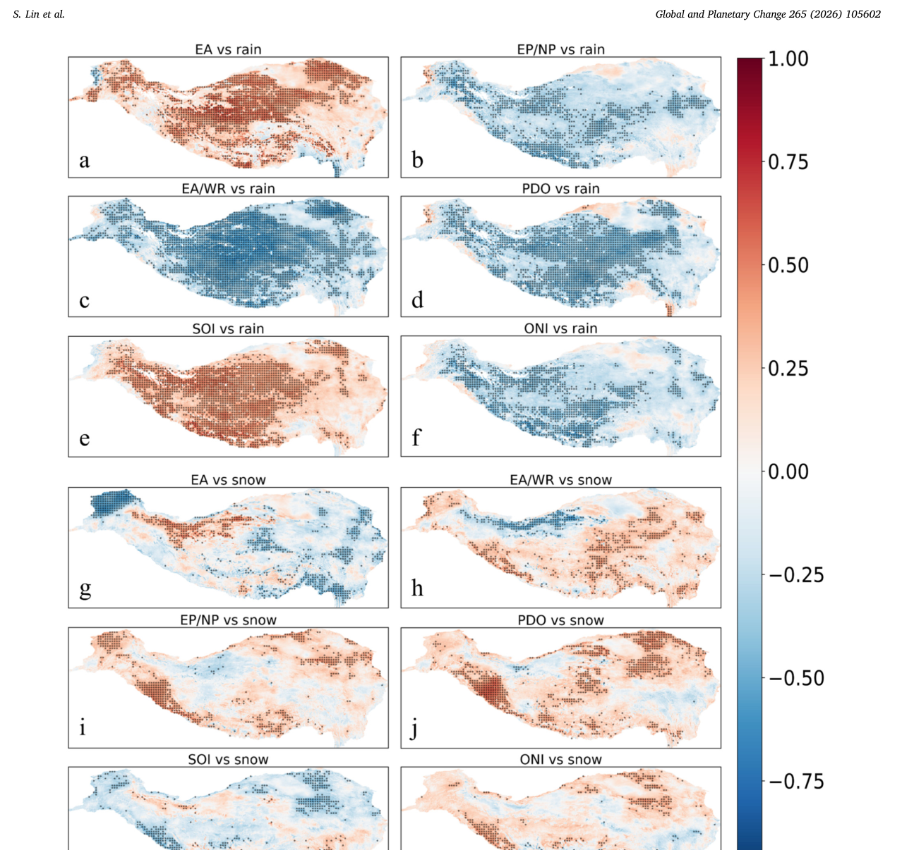
图9. 气候指数（根据图8选出6个最相关指数）与降水相态相关的空间型。
Fig. 9. Spatial patterns of correlations between climate indices (the six most relevant indices are selected based on Fig. 8) and precipitation phases.
a–f 降雨与6个关键气候指数（EA、EP/NP、EA/WR、SOI、ONI和PDO；定义见表1）相关系数的空间分布。
a–f Spatial distribution of correlation coefficients between rainfall and six key climate indices (EA, EP/NP, EA/WR, SOI, ONI, and PDO; see Table 1 for definitions of these indices).
g–l 降雪与同一组6个指数相关系数的空间分布。
g–l Spatial distribution of correlation coefficients between snowfall and the same six indices.
打点区表示相关在 p < 0.05 水平上统计显著的区域。
Stippled areas indicate regions where the correlations are statistically significant at the p < 0.05 level.
降雨对大尺度环流模态（尤其是EA/WR和PDO，图9c和e）表现出一致的全高原敏感性，而降雪则呈空间破碎和局地化响应。
Rainfall exhibited a coherent, plateau-wide sensitivity to large-scale circulation modes (notably the EA/WR and PDO, Fig. 9c and e), whereas snowfall displayed a spatially fragmented and localized response.
最显著的是，PDO对青藏高原施加“跷跷板式”调节（图9d和j），表现为与降雪显著正相关、同时与降雨负相关。
Most notably, the PDO exerted a “seesaw-like” regulatory effect on the TP (Fig. 9d and j), characterized by a significant positive correlation with snowfall and a concurrent negative correlation with rainfall.
这种相反关系凸显PDO是与该区年际降水相态分配强烈相关的因子。
This opposing relationship highlights the PDO as a factor strongly associated with interannual precipitation phase partitioning in this region.
覆盖1979–2023年的时间序列比较揭示了降水相态与大尺度气候遥相关之间鲜明的年际协同演变型（图10）。
Time-series comparisons spanning the period 1979–2023 revealed distinct interannual co-evolutionary patterns between precipitation phases and large-scale climatic teleconnections (Fig. 10).
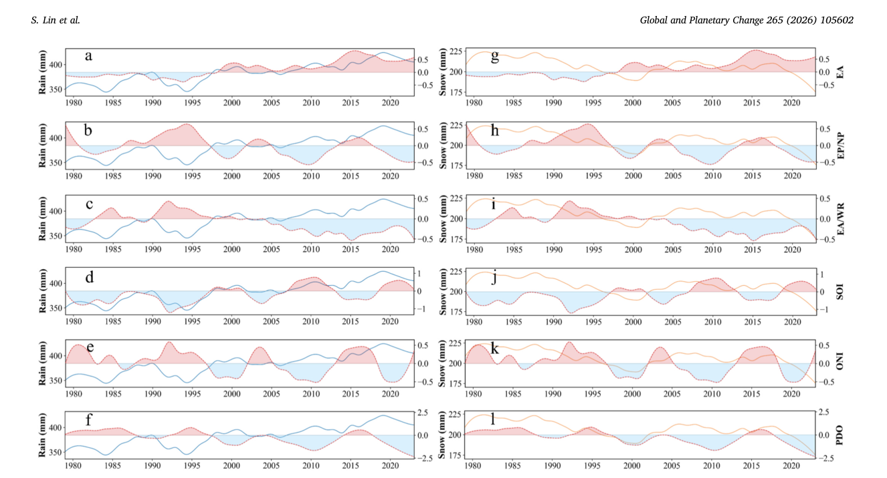
图10. 1979–2023年气候指数与降水相态的时间协同演变。
Fig. 10. Temporal co-evolution of climate indices and precipitation phases from 1979 to 2023.
a–f 年降雨（蓝色实线）与6个气候指数时间序列（红色虚线及阴影）的年际变化比较。
a–f Interannual variations in annual rainfall (blue solid lines) compared with the time series of six climate indices (red dashed lines with shading).
g–l 年降雪（橙色实线）与相应气候指数的年际变化比较。
g–l Interannual variations in annual snowfall (orange solid lines) compared with the corresponding climate indices.
（关于本图图例中颜色指代的解释，读者请参阅本文网络版。）
(For interpretation of the references to colour in this figure legend, the reader is referred to the web version of this article.)
降雨变率与EA/WR和PDO指数均呈突出的负时间相关（图10c和f）。
Rainfall variability exhibited a prominent negative temporal correlation with both the EA/WR and PDO indices (Fig. 10c and f).
具体而言，EA/WR和PDO正位相时段（红色阴影）通常与相对降雨亏缺或下降趋势同时出现。
Specifically, periods characterized by positive phases of the EA/WR and PDO (red shading) generally coincided with relative rainfall deficits or declining trends.
相反，这些指数的负向偏离（蓝色阴影）对应于降雨的显著放大。
Conversely, negative excursions (blue shading) in these indices corresponded to significant amplifications in rainfall.
值得注意的是，2010年代以来PDO的持续负位相，与青藏高原记录到的历史最大降雨精确对齐。
Notably, the persistent negative phase of the PDO observed since the 2010s aligned precisely with the historical maximum rainfall recorded over the TP.
此外，降雨与SOI呈正向同步变率，高SOI值（指示拉尼娜条件）在时间上与降雨峰值重合（图10d）。
Furthermore, rainfall exhibited positive synchronous variability with the SOI, where high SOI values (indicative of La Niña conditions) temporally coincided with peaks in rainfall magnitude (Fig. 10d).
与液态降水的响应不同，降雪的时间演变与PDO呈清晰的正向同步（图10l）。
In contrast to the response of liquid precipitation, the temporal evolution of snowfall demonstrated a clear positive synchronization with the PDO (Fig. 10l).
正PDO异常，例如1980年代中期和2015年前后，常与降雪增强相伴，而负PDO位相则对应固态降水相对亏缺期。
Positive PDO anomalies, such as those occurring in the mid-1980s and around 2015, were frequently associated with enhanced snowfall, whereas negative PDO phases corresponded to periods of relative deficit in solid precipitation.
这种时间位相排列的分异表明，PDO的不同位相可能对青藏高原液态和固态降水施加相反的调节作用。
This divergence in temporal phase alignment suggests that different phases of PDO may exert opposing regulatory effects on liquid and solid precipitation over the TP.
统计分布进一步印证了气候遥相关位相对降水型的不对称强迫效应（图11）。
Statistical distributions further corroborated the asymmetric forcing effects of climatic teleconnection phases on precipitation regimes (Fig. 11).
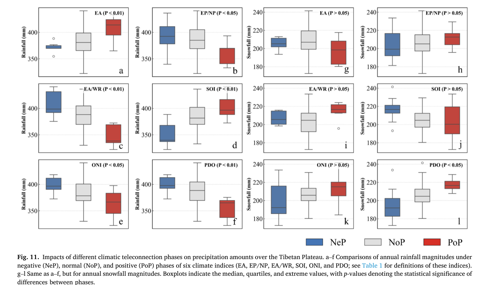
图11. 不同气候遥相关位相对青藏高原降水量的影响。
Fig. 11. Impacts of different climatic teleconnection phases on precipitation amounts over the Tibetan Plateau.
a–f 6个气候指数（EA、EP/NP、EA/WR、SOI、ONI和PDO；定义见表1）负位相（NeP）、正常位相（NoP）和正位相（PoP）下年降雨量的比较。
a–f Comparisons of annual rainfall magnitudes under negative (NeP), normal (NoP), and positive (PoP) phases of six climate indices (EA, EP/NP, EA/WR, SOI, ONI, and PDO; see Table 1 for definitions of these indices).
g–l 同a–f，但为年降雪量。
g–l Same as a–f, but for annual snowfall magnitudes.
箱线图给出中位数、四分位和极值，p值表示位相之间差异的统计显著性。
Boxplots indicate the median, quartiles, and extreme values, with p-values denoting the statistical significance of differences between phases.
降雨对位相转换高度敏感，由此产生的量级差异达到很高的统计显著性（p < 0.01）。
Rainfall exhibited a high degree of sensitivity to phase transitions, with the resulting magnitude differences attaining a high level of statistical significance (p < 0.01).
具体而言，年降雨在EA/WR和PDO的负位相以及拉尼娜条件（正SOI、负ONI）下显著偏高（图11c–f）。
Specifically, annual rainfall was significantly elevated during negative phases of both the EA/WR and PDO, as well as under La Niña conditions (positive SOI, negative ONI) (Fig. 11c–f).
相反，降雪对大多数气候指数的变化呈统计惯性（p > 0.05），但对PDO响应显著（p < 0.05）。
In contrast, snowfall displayed statistical inertia to variations in most climate indices (p > 0.05), yet it responded significantly to the PDO (p < 0.05).
PDO正位相有利于固态降水增强——这一响应与液态降水直接相反——从而支持PDO是调制青藏高原固态与液态水资源年际分配的显著因子。
The positive phase of the PDO favored an enhancement of solid precipitation — a response that directly opposed that of liquid precipitation — thereby supporting the PDO as a notable factor in modulating interannual partitioning between solid and liquid water resources over the TP.
尽管这些相关提示了潜在联系，它们并不确认直接因果，因为诸如区域大气环流等混杂因子也可能起作用。
While these correlations suggest potential associations, they do not confirm direct causation, since confounding factors—such as regional atmospheric circulation—may also be at play.
4. 讨论4. Discussions
以往研究已稳健确立了海拔依赖增温（EDW）效应，其定义为地表气温随海拔升高而加速上升（Rangwala and Miller, 2012; Pepin et al., 2015; Wang et al., 2022a）。
Previous studies have robustly established the elevation-dependent warming (EDW) effect, defined as an accelerated rise in surface air temperature with increasing altitude (Rangwala and Miller, 2012; Pepin et al., 2015; Wang et al., 2022a).
在此背景下，作为地球上气候最敏感的高山区之一，青藏高原高海拔放大增温为降水相态的系统性转变提供了关键热力学框架。
Against this backdrop, amplified high-altitude warming over the TP, one of the most climatically sensitive alpine regions on Earth, provides a critical thermodynamic framework for systematic shifts in precipitation phases.
本研究还揭示了不同海拔区间内降水相态的差异特征（图12）。
Our study also reveals varying characteristics of precipitation phases within different altitudinal intervals (Fig. 12).
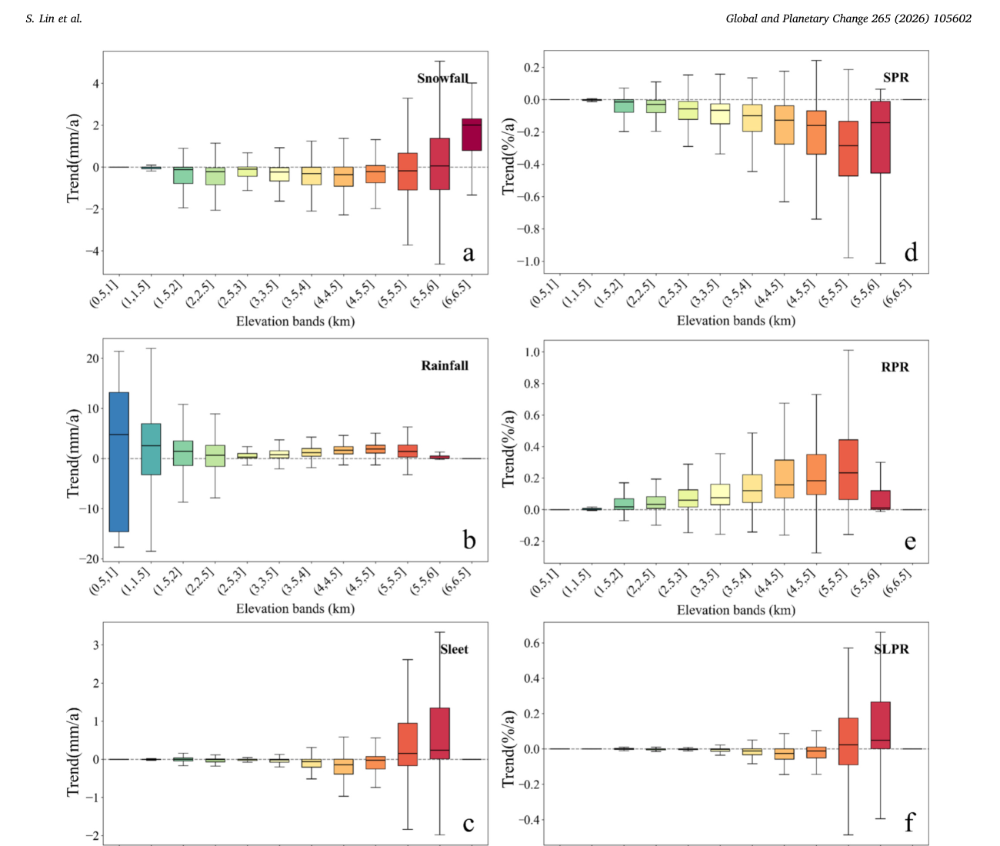
图12. 不同海拔区间内各降水相态及其比例（其中SPR为降雪占总降水比例，RPR为降雨占总降水比例，SLPR为雨夹雪占总降水比例）特征的差异。
Fig. 12. Differences in the characteristics of different phases of precipitation and their proportions (where SPR is the snowfall-to-precipitation ratio, RPR is the rainfall-to-precipitation ratio, and SLPR is the sleet-to-precipitation ratio) across different altitude intervals.
尽管降雨在所有海拔带均呈一致增加趋势（图12b），降水“降雨化”速率（以RPR量化）随海拔显著增大，并在5–5.5 km海拔带达到最大中位值0.23%/a（图12e）。
Although rainfall exhibits a consistent increasing trend across all altitudinal belts (Fig. 12b), the rate of precipitation “rainification” (quantified by the RPR) increases markedly with elevation and reaches its maximum median value of 0.23%/a within the 5–5.5 km altitudinal zone (Fig. 12e).
这表明降水相态转换并非仅由总降水量控制，而是对高海拔热力强迫高度敏感。
This indicates that precipitation phase transitions are not solely governed by total precipitation volume but are acutely sensitive to high-altitude thermal forcing.
在持续EDW下，历史上由固态降水主导的中高海拔正迅速转为降雨，SPR在5.5 km以下呈递进下降，并在5–5.5 km带达到最强负中位趋势−0.28%/a（图12d）。
Under persistent EDW, mid-to-high altitudes historically dominated by solid precipitation are undergoing a rapid conversion to rainfall, with SPR showing a progressive decline below 5.5 km and attaining the strongest negative median trend of −0.28%/a in the 5–5.5 km belt (Fig. 12d).
在这一5–5.5 km敏感带内，雨、雪和雨夹雪之间的转换被大大加强，使该带成为雨—雪转换线垂直方向上最活跃的层次。
Within this 5–5.5 km sensitive belt, transitions among rain, snow, and sleet are greatly intensified, marking this zone as the most vertically active layer in terms of the rain–snow transition line.
在更高海拔的冰冻圈核心区（> 5.5 km），SLPR转为正中位趋势（5.5–6 km为0.05%/a）（图12f），表明混合相降水已开始侵入传统积雪和冰川积累区。
At higher altitudes, in the cryospheric core (> 5.5 km), the SLPR exhibits a shift to positive median trends (0.05%/a at 5.5–6 km) (Fig. 12f), suggesting that mixed-phase precipitation has begun to encroach upon traditional snowpack and glacial accumulation zones.
值得注意的是，降雪体积仅在5.5 km以上增加（图12a）；尽管EDW增强了大气水汽输送和持水能力，该最高带内降水事件期间的温度通常仍低于相态转换阈值，从而有利于固态降水形成而非液化。
Notably, snowfall volume increases exclusively above 5.5 km (Fig. 12a); despite EDW enhancing atmospheric moisture transport and water-holding capacity, temperatures during precipitation events in this highest zone generally remain below the phase-transition threshold, thereby favoring solid precipitation formation over liquefaction.
混合和液态降水的上坡扩展，意味着雨—雪线向极端海拔的地形迁移。
The upslope expansion of mixed and liquid precipitation signifies a topographic migration of the rain–snow line toward extreme altitudes.
高海拔雨落雪事件的增多不仅破坏雪层结构、触发湿雪雪崩或雪泥流，还损害冰冻圈作为固态水库的功能（Würzer et al., 2016）。
The proliferation of high-altitude rain-on-snow events not only destabilizes snowpack structure, triggering wet-snow avalanches or slush flows, it also impairs the function of the cryosphere as a solid-state water reservoir (Würzer et al., 2016).
这些变化凸显了在持续增温下进一步定量评估高山区相关雪崩和复合洪水风险的紧迫性。
These changes highlight the urgency of further quantitative research to assess the associated avalanche and compound flood risks in high-mountain regions under ongoing warming.
这通过降雨与融水径流的同步，加大了下游复合洪水风险（Nie et al., 2017; Immerzeel et al., 2020），而液态水渗入粒雪层会改变冰川热力结构，可能加速动力变薄与破碎（Gilbert et al., 2018; Pörtner et al., 2019）。
This heightens the risk of downstream compound floods through the synchronization of rainfall and meltwater runoff (Nie et al., 2017; Immerzeel et al., 2020), while liquid water infiltration into the firn layer alters glacial thermodynamic structures, potentially accelerating dynamic thinning and fragmentation (Gilbert et al., 2018; Pörtner et al., 2019).
在持续增温下，稳定的冰冻圈条件正被限制在日益收缩的海拔范围内，凸显青藏高原高海拔水文—冰冻圈系统的高度脆弱性（Pepin et al., 2015; Wu et al., 2023; Zhao et al., 2024）。
Under sustained warming, stable cryospheric conditions are being confined to an increasingly shrinking altitudinal range, underscoring the acute vulnerability of high-altitude hydro-cryospheric systems on the TP (Pepin et al., 2015; Wu et al., 2023; Zhao et al., 2024).
青藏高原冬—春降水相态遵循一条耦合动力路径。
The winter–spring precipitation phase over the TP follows a coupled dynamical pathway.
在PDO正位相期间，北太平洋暖SST异常激发PNA和跨欧亚遥相关，从而加强副热带西风急流（SWJ）的南移与强度，并激活南支槽（SBT）。
During the positive PDO phase, warm North Pacific SST anomalies excite the PNA and trans-Eurasian teleconnections, which intensify the southward displacement and strength of the Subtropical Westerly Jet (SWJ) and activate the Southern Branch Trough (SBT).
活跃的SBT随后增强来自印度洋和太平洋向青藏高原的水汽输送。
The active SBT subsequently enhances moisture transport from both the Indian Ocean and Pacific toward the TP.
水汽抵达高原后，地形抬升、辐合上升和高层冷却促进冰晶增长，导致降雪增加——尤其在东部和南部青藏高原（Liu et al., 2023b）。
Upon reaching the plateau, orographic lifting, convergent ascent, and upper-level cooling promote ice crystal growth, resulting in increased snowfall—particularly over the eastern and southern TP (Liu et al., 2023b).
需要指出的是，本研究所有相关分析均使用未经去趋势的原始时间序列。
Notably, all correlation analyses in this study use original non-detrended time series.
因此，所检出的关系捕捉的是年际变率与长期共变的共同影响，而不是仅由去趋势资料得到的遥相关型。
The detected relationships thus capture the joint influences of interannual variability and long-term covariability, rather than teleconnection patterns derived solely from detrended data.
这一机制解释了观测到的降雪与PDO正位相之间的显著正向同步（p < 0.05；图10l、11f）。
This mechanism accounts for the observed significant positive synchronization between snowfall and the positive PDO phase (p < 0.05; Figs. 10l, 11f).
类似地，正ONI位相通过加强SBT有利于降雪增加，而正SOI位相（拉尼娜）则加强有利于降雨的水汽通量，这与高SOI和负PDO时段观测到的降雨峰值一致（p < 0.01）。
Similarly, the positive ONI phase favors increased snowfall via SBT intensification, whereas the positive SOI phase (La Niña) strengthens rainfall-favorable moisture fluxes, consistent with the observed rainfall peaks during periods of high SOI and negative PDO (p < 0.01).
此外，EP/NP、EA/WR和EA环流型调制冷涌和东亚大槽，对雨—雪比施加直接控制（Liu et al., 2021）。
Furthermore, the EP/NP, EA/WR, and EA circulation patterns modulate cold surges and the East Asian Trough, exert direct control over the rain-to-snow ratio (Liu et al., 2021).
在持续增温下，这些遥相关驱动的转变叠加在收缩的冰冻圈基线上，进一步放大高海拔水文系统的脆弱性（Pepin et al., 2015）。
Under sustained warming, these teleconnection-driven shifts are superimposed on a contracting cryospheric baseline, further amplifying the vulnerability of high-altitude hydrological systems (Pepin et al., 2015).
所用数据集的时空分辨率以及参数化方案固有局限所带来的不确定性，限制了对局地微物理过程的精确刻画。
Uncertainties stemming from the spatiotemporal resolution of the employed datasets and inherent limitations of the parameterization scheme constrain the precise characterization of local microphysical processes.
尽管我们整合了高分辨率TPMFD以缓解青藏高原西部和高海拔区现场观测稀缺的问题，格点资料仍易受再分析产品和降尺度算法固有偏差影响（He et al., 2020）。
Although we integrated the high-resolution TPMFD to alleviate the scarcity of in situ observations across the western and high-altitude regions of the TP, the gridded data remain susceptible to biases inherent in reanalysis products and downscaling algorithms (He et al., 2020).
此外，尽管本文所用降水相态判别方案在统计上优于传统温度阈值方法，它完全依赖于日平均Tw。
Furthermore, although the precipitation phase discrimination scheme applied herein exhibits statistical superiority over traditional temperature threshold methods, it relies exclusively on daily mean Tw.
这种时间聚合忽略了亚日热力波动和垂直大气廓线，而这二者对准确相态划分至关重要（Harder and Pomeroy, 2013; Jennings et al., 2018）。
This temporal aggregation overlooks sub-daily thermal fluctuations and vertical atmospheric profiles, both of which are critical for accurate phase partitioning (Harder and Pomeroy, 2013; Jennings et al., 2018).
因此，这种平滑效应可能低估短暂相态（例如雨夹雪）的频率，并可能在邻近0 °C等温线的复杂地形中引入误分类偏差（Marks et al., 2013; Saydi et al., 2021）。
Consequently, this smoothing effect may underestimate the frequency of transient phases (e.g., sleet) and potentially introduce misclassification biases in complex terrain adjacent to the 0 °C isotherm (Marks et al., 2013; Saydi et al., 2021).
我们对气候遥相关影响的机制归因仍主要是统计性的，缺乏深入的动力验证。
Our mechanistic attribution of climatic teleconnection impacts remains primarily statistical, lacking in-depth dynamical verification.
尽管我们稳健识别了EA/WR和PDO对降雨与降雪的不对称调节效应，当前分析仍高度依赖线性回归。
Although we robustly identified the asymmetric regulation effects of the EA/WR and PDO on rainfall and snowfall, our current analysis relies heavily on linear regression.
它尚未采用数值模拟方法来显式模拟这些气候遥相关调制局地热力条件的动力路径（例如水汽通量散度和垂直运动异常）（Dong et al., 2018; Bevington et al., 2019）。
It does not yet employ numerical modeling approaches to explicitly simulate the dynamical pathways (e.g., moisture flux divergence and vertical motion anomalies) through which these climatic teleconnections modulate local thermodynamic conditions (Dong et al., 2018; Bevington et al., 2019).
而且，大气环流作为复杂非线性网络在运行；共现遥相关之间的交互效应（例如PDO对ENSO的调制）及其对降水相态分配的非线性强迫，仍需通过严格的物理诊断分析进一步考察（Yoon and Yeh, 2010; Newman et al., 2016）。
Moreover, atmospheric circulation operates as a complex nonlinear network; the interactive effects between co-occurring teleconnections (e.g., modulation of the ENSO by the PDO) and their nonlinear forcing on precipitation phase partitioning warrant further investigation via rigorous physical diagnostic analysis (Yoon and Yeh, 2010; Newman et al., 2016).
最后，尽管我们的发现凸显了显著的水文转变，对相态转换速率的全面跨区域比较仍是当前研究范围的一个局限。
Finally, while our findings highlight a significant hydrological shift, a comprehensive cross-regional comparison of phase transition rates remains a limitation of the current study scope.
初步比较表明，青藏高原降雪占总降水比例（SPR）正以−0.13 pp/yr（p < 0.01）下降，明显高于其他主要区域——例如中亚高山区为−0.07 pp/yr（Li et al., 2020）。
Preliminary comparisons indicate that the snowfall precipitation ratio (SPR) over the TP is decreasing at a rate of −0.13 pp./yr (p < 0.01), which is notably higher than the rates observed in other major regions—such as the alpine regions of Central Asia, where the rate is −0.07 pp./yr (Li et al., 2020).
这一有启发性的观察表明，“第三极”不仅以全球平均两倍的速率增温，还在经历一种“放大”的水文转换。
This insightful observation suggests that the “Third Pole” is not only warming at twice the global average rate but also undergoing an “amplified” hydrological transition.
其接近临界0 °C热力阈值，很可能使其降水相态比其他山地或全球区域更易受增量增温影响。
Its proximity to the critical 0 °C thermal threshold likely makes its precipitation phases more vulnerable to incremental warming than those in other mountainous or global regions.
由于资料协调和稿件篇幅限制，我们未在本研究中开展详细比较分析。
Due to constraints related to data harmonization and manuscript length, we did not conduct a detailed comparative analysis in this study.
然而，我们将其视为极有前景的研究方向，并计划在未来研究中开展深入的多区域比较模拟，以进一步强调青藏高原的独特脆弱性。
However, we regard this as a highly promising research direction and aim to perform in-depth, multi-regional comparative modeling in future studies to further emphasize the unique vulnerability of the TP.
5. 结论5. Conclusions
总之，本研究系统刻画了气候变化下青藏高原降水相态的时空动态，提供了与增温相关的“雪转雨”转换相一致的证据。
In summary, in this study, we systematically characterize the spatiotemporal dynamics of precipitation phases over the TP under climate change, providing evidence consistent with a warming-associated “snow-to-rain” transition.
主要发现概括如下：（1）青藏高原降水相态组成发生了显著转变，总降水因降雨增强而增加，而降雪及其对总降水的贡献（即SPR）下降。
Our key findings are summarized as follows: (1) The TP has experienced a marked shift in precipitation phase composition, with total precipitation increasing owing to enhanced rainfall, while snowfall and its contribution to total precipitation (i.e., SPR) have declined.
这一转换在空间上不均匀，最剧烈的降雪减少出现在中高海拔和东南部山区。
This transition is spatially heterogeneous, with the most dramatic snowfall reductions at mid-to-high elevations and in southeastern mountainous regions.
（2）季节分析表明夏季是相态转换的关键时段，与暖季升温相伴的是最大的降雪下降和最显著的降雨增加。
(2) Seasonal analyses suggest that summer is the critical period for phase conversion, coinciding with rising warm-season temperatures that are accompanied by the largest declines in snowfall and most substantial increases in rainfall.
（3）大尺度气候遥相关（尤其是EA/WR和PDO）对降水相态施加不对称调节效应，其中PDO与年际相态分配呈强关联。
(3) Large-scale climatic teleconnections (particularly the EA/WR and PDO) exert asymmetric regulatory effects on precipitation phases, with the PDO showing a strong association with interannual phase partitioning.
这些发现凸显了增温对青藏高原水循环的影响，并可能通过固态水储量减少和洪水风险增加，威胁其作为“亚洲水塔”的功能。
These findings highlight the impacts of warming on the hydrological cycle of the TP, potentially threatening its function as the “Asian Water Tower” through reduced solid water storage and increased flood risks.
尽管这些结果来自统计相关和观测趋势，它们仍受潜在混杂因子和线性分析局限所带来的不确定性影响。
While these results are derived from statistical correlations and observed trends, they are subject to uncertainties associated with potential confounding factors and the limitations of linear analysis.
未来研究应结合高分辨率数值模拟和去趋势敏感性分析，进一步厘清遥相关与局地动力学之间的非线性相互作用，从而改进对这一气候敏感区域水资源变率的预估。
Future research should combine high-resolution numerical modeling and detrended sensitivity analyses to further disentangle nonlinear interactions between teleconnections and local dynamics, thus improving projections of water resource variability in this climatically sensitive region.
作者贡献、声明、致谢与数据可用性CRediT, declarations, acknowledgements, and data availability
CRediT作者贡献声明CRediT authorship contribution statement
林思辰：写作——审阅与编辑，写作——初稿，可视化，方法，调查，数据整理。
Sichen Lin: Writing – review & editing, Writing – original draft, Visualization, Methodology, Investigation, Data curation.
谢兆燕：写作——审阅与编辑。
Zhaoyan Xie: Writing – review & editing.
王远伟：写作——审阅与编辑，可视化，监督，方法，调查，经费获取，数据整理，概念化。
Yuanwei Wang: Writing – review & editing, Visualization, Supervision, Methodology, Investigation, Funding acquisition, Data curation, Conceptualization.
王凌霄：写作——审阅与编辑，调查，经费获取。
Lingxiao Wang: Writing – review & editing, Investigation, Funding acquisition.
王磊：写作——审阅与编辑，概念化。
Lei Wang: Writing – review & editing, Conceptualization.
郭晓宇：写作——审阅与编辑，经费获取。
Xiaoyu Guo: Writing – review & editing, Funding acquisition.
柴晨浩：写作——审阅与编辑。
Chenhao Chai: Writing – review & editing.
李婷：写作——审阅与编辑。
Ting Li: Writing – review & editing.
敖诗琪：写作——审阅与编辑。
Shiqi Ao: Writing – review & editing.
张星娇：写作——审阅与编辑。
Xingjiao Zhang: Writing – review & editing.
赵林：写作——审阅与编辑，调查，概念化。
Lin Zhao: Writing – review & editing, Investigation, Conceptualization.
利益冲突声明Declaration of competing interest
作者声明，不存在已知的可能影响本文所报告工作的竞争性经济利益或个人关系。
The authors declare that they have no known competing financial interests or personal relationships that could have appeared to influence the work reported in this paper.
致谢Acknowledgements
本研究由国家自然科学基金（批准号U23A2010、42201141、42376254）和西藏自治区科技计划联合资助项目（批准号XZ202403ZY0001）共同资助。
This study was jointly supported by the National Natural Science Foundation of China (Grant Nos. U23A2010, 42201141, 42376254) and Tibet Autonomous Region Science and Technology program co-funded project (Grant No. XZ202403ZY0001).
感谢编辑和匿名审稿人提出的有益意见与建设性建议。
We thank the editor and the anonymous reviewers for their helpful comments and constructive suggestions.
数据可用性Data availability
气象站资料由国家气象信息中心/中国气象局提供（https://data.cma.cn/）。
The meteorological station data was provided by the National Meteorological Information Center of the China Meteorological Administration (https://data.cma.cn/).
第三极高分辨率气象驱动数据集（TPMFD）可从国家青藏高原科学数据中心下载（https://doi.org/10.11888/Atmos.tpdc.300398）。
The Third Pole High-Resolution Meteorological Forcing Dataset (TPMFD) can be downloaded from the National Tibetan Plateau Data Center (https://doi.org/10.11888/Atmos.tpdc.300398).
Randolph冰川编目（RGI）第7.0版取自美国国家冰雪数据中心（https://doi.org/10.5067/f6jmovy5navz）。
The Randolph Glacier Inventory (RGI) version 7.0 was obtained from the National Snow and Ice Data Center (https://doi.org/10.5067/f6jmovy5navz).
中国长期逐日积雪深度数据集（1979–2025）由国家青藏高原科学数据中心提供（https://doi.org/10.11888/Geogra.tpdc.270194）。
The long-term series of daily snow depth dataset in China (1979–2025) was provided by the National Tibetan Plateau Data Center (https://doi.org/10.11888/Geogra.tpdc.270194).
10个遥相关指数可从美国国家海洋和大气管理局下载（https://www.cpc.ncep.noaa.gov）。
The ten teleconnection indices can be downloaded from National Oceanic and Atmospheric Administration (https://www.cpc.ncep.noaa.gov).